import os
import tempfile
from pathlib import Path
import numpy as np
import pandas as pd
import matplotlib.pyplot as plt
from matplotlib.lines import Line2D
from matplotlib.patches import FancyArrowPatch, Polygon
from IPython.display import Markdown
from gridiron import (Play, Field, offense, defense, routes as r, bdb, style, show_animation,
draw_frame, draw_marker, FIELD_WIDTH)
from gridiron.data import nfl
style.apply()
FPS = 10 # NFL tracking: 10 frames per second
SIM = Path(tempfile.mkdtemp(prefix="bdb_sim_")) # our stand-in for a Kaggle download folderTracking Data and the Big Data Bowl
Every player, ten times a second: how to read the NFL’s tracking files, turn dots into football (separation, the pocket, motion, safety rotation), and what the Big Data Bowl has taught the league
A broadcast comes back from a commercial with a replay. The receiver runs a comeback, the ball arrives, and the screen freezes on a glowing ring around him: separation 3.1 yards. Later the same broadcast shows a safety’s path as a bright line sweeping from one hash to the middle of the field the instant the ball was snapped. Where do those numbers and lines come from, how much should you trust them, and could you make them yourself? Yes, with about a hundred lines of Python. This chapter shows how. It also builds, for real, the safety-rotation chart that Disguise, Rotation, and Split-Field Coverage showed you as a finished picture.
You’ll be able to:
- Read a tracking file: say what one row is, what
x,y,s,a,dis,oanddirmean, and where the point (0, 0) is on the field. - Flip every play so the offense moves left to right, and line thousands of plays up on the snap or on the throw.
- Draw and animate any play from tracking frames with
gridiron, the same library that draws every diagram in this book. - Compute separation, pocket area, motion at the snap, the shell at the snap and safety rotation from raw coordinates, and say what each number misses.
- Sketch three projects of your own: a man/zone classifier, a route classifier and a disguise measure.
- Recognise the Big Data Bowl’s themes since 2019, and what the winning entries had in common.
NoteYou’ll need
- Tendencies: PROE, Personnel, Motion, and Coverage: coverage charting (people watching film and labelling each play’s coverage, the source of the coverage columns in nflverse data and in the Big Data Bowl files) and the neutral situation filter. This chapter replaces “what someone charted” with “where everyone actually was.”
- Disguise, Rotation, and Split-Field Coverage: disguise (showing one coverage and playing another), post-snap rotation (safeties changing the shell after the snap) and late rotation (moving only at the snap, so the quarterback cannot see it coming). The rotation chart in that chapter is rebuilt here, step by step.
- Working with nflverse Data in Python: pandas, and loading nflverse data with nflreadpy.
The data this chapter uses
Part 13 shows its code, so read the cells as part of the text. Two kinds of data appear.
Season summaries from Next Gen Stats, via nflverse. The NFL publishes some tracking-derived numbers for every season, such as each receiver’s average separation and each quarterback’s average time to throw. nflverse mirrors them, and nfl().load_nextgen_stats() loads them. These are real.
Frame-by-frame tracking, simulated. The raw files, with every player’s position ten times a second, are released only through the Big Data Bowl on Kaggle. You need a free account and must accept the competition’s rules to download them, and those rules limit how the data may be shared, so this book does not ship them.1 Instead, every frame-level figure here uses plays simulated by gridiron and written out in the exact format of the Big Data Bowl files (same columns, same coordinate system, same quirks), labelled simulated, BDB-format wherever they appear. That matters more than it sounds: every function in this chapter runs unchanged on the real files. Wherever a figure is simulated, a cell marked “not run here” follows it with the code for the real data, which you can run once you have downloaded a Big Data Bowl release into data/bdb/.
Two kinds of code are kept out of your way. The simulator (the plumbing that fakes a Kaggle download) and the drawing code (font sizes, label positions) are folded away on the website under “Show the simulator” and “Show the plotting code”, and left out of the printed book. Every line that loads, reshapes or measures tracking data is shown.
Show the plotting code (tables and frame strips)
def md_table(df, digits=2):
"""Show a small DataFrame as a Markdown table (presentation plumbing, not football)."""
out = df.copy()
for c in out.select_dtypes("number"):
out[c] = out[c].map(lambda v: "" if pd.isna(v) else f"{v:.{digits}f}".rstrip("0").rstrip("."))
align = ["---:" if pd.api.types.is_numeric_dtype(df[c]) else ":---" for c in df]
rows = [list(out.columns), align] + out.astype(str).values.tolist()
return Markdown("\n".join("| " + " | ".join(map(str, r_)) + " |" for r_ in rows))
def strip(df, times, window, lateral, def_trail_lw=1.0, ncols=2, width_in=6.5, to_go=10):
"""Small multiples of a play with a fixed window, so nobody sits on the edge.
times: [(seconds from the snap, panel title), ...]; window: (behind, ahead) yards from the LOS;
lateral: (y_lo, y_hi) in field y. def_trail_lw thickens the defenders' trails.
"""
df = df.copy()
df["_id"] = df["displayName"]
los = float(df.loc[(df["side"] == "ball") & np.isclose(df["time"], 0.0), "x"].iloc[0])
tmap = df.groupby("frameId")["time"].first()
nrows = int(np.ceil(len(times) / ncols))
panel_h = width_in / ncols * (window[1] - window[0]) / (lateral[1] - lateral[0]) + 0.3
fig, axes = plt.subplots(nrows, ncols, figsize=(width_in, nrows * panel_h), squeeze=False)
for ax, (t, title) in zip(axes.flat, times):
fid = int((tmap - t).abs().idxmin())
fld = Field(ax=ax, orient="vertical", los=los, window=window, lateral=lateral, to_go=to_go)
for (_, side), g in df[df["frameId"] <= fid].groupby(["_id", "side"]):
if side == "ball":
continue
px, py = fld.xy(g["x"].values, g["y"].values)
is_off = side == "off"
ax.plot(px, py, color=style.OFFENSE if is_off else style.DEFENSE,
lw=1.0 if is_off else def_trail_lw, alpha=0.45 if is_off else 0.75, zorder=3)
ppy = fld.pts_per_yard() * 1.2 # markers a little larger than the default
for _, row in df[df["frameId"] == fid].iterrows():
px, py = fld.xy(row["x"], row["y"])
draw_marker(ax, float(px), float(py), row["side"], row.get("label", ""), ppy, r=0.85)
ax.set_title(title, fontsize=8.5, color=style.INK_2)
for ax in axes.flat[len(times):]:
ax.axis("off")
fig.tight_layout()
plt.show()
def show_play(df, times, **kw):
"""A video on the website, a frame strip with fixed windows in print."""
if os.environ.get("RTG_FORMAT", "").lower() in ("pdf", "typst", "print"):
return strip(df, times, **kw)
return show_animation(df, times=[t for t, _ in times], to_go=kw.get("to_go", 10))Where tracking data comes from
Every NFL player wears two or three small radio chips in his shoulder pads. Twenty to thirty receivers mounted around the stadium listen for them, and from the timing of the signals a computer works out where each chip is, about ten times a second. More than one chip per player gives you not just where he is but which way his shoulders face. The ball can carry a chip too. The league calls the whole system, and the group of analysts that turns its output into statistics, Next Gen Stats.2
Tracking data is the result: the recorded position of every player, many times a second, with speed, acceleration and body angles derived for each moment. Next Gen Stats (also called NGS) is both the NFL’s tracking system and the league group that publishes stats from it.
Why chips, when basketball and baseball use cameras? The NBA had camera tracking in every arena from the 2013-14 season, and baseball’s Statcast followed in 2015.3 Football is the hard case for cameras: twenty-two large bodies pile on top of each other at the line, and a camera cannot see a guard who is buried under two defensive tackles. A radio chip does not care what is on top of it. The NFL ran a trial in seventeen stadiums in 2014 and went league-wide the next season; the data has been the backbone of the league’s analytics ever since.4
What tracking data does not record matters as much as what it does:
- No hands, eyes or feet. Each player is one point (roughly the middle of his shoulder pads). A tracking file cannot tell you that a corner jammed a receiver, that a guard’s hands were outside the frame, or where the quarterback was looking.
- No assignments. It records where the free safety went, not where he was supposed to go. Every “coverage” label you will meet in a tracking file was added by people watching film (PFF, in the Big Data Bowl files) or by a model trained on such labels.
- A little noise. Positions are accurate to within about six inches,5 not to the millimetre, and a player standing still seems to drift slightly from frame to frame. That is why speeds near zero are unreliable, and why careful analysts smooth positions before computing speeds and accelerations from them (you will see why, with numbers, in a moment).
CautionCommon misconception
“Tracking data knows the coverage.” It knows where eleven defenders stood and moved. Whether that was Cover 3 or quarters is an interpretation, and two careful charting services can disagree about it. The man/zone and coverage columns in the Big Data Bowl files are charted labels sitting next to the tracking, not part of it. Much of the best Big Data Bowl work is about teaching a model to make that interpretation from the dots.
What is public, and when
Three layers of tracking data reach the public, at different speeds:
| What | Detail | When you get it |
|---|---|---|
| Broadcast graphics | One number on one play (speed, separation, completion probability) | Live |
| NGS season and weekly summaries | Per-player averages: separation, cushion (how far off the receiver his defender lined up), time to throw, expected rushing yards and more; on nextgenstats.nfl.com and in nflverse | During the season, weekly |
| Raw frames (x, y, speed, angles for all 22 players) | Big Data Bowl releases only: a slice of past seasons | Once a year, for the competition |
So the raw frames you can work with always lag the game you watched by a season or more. The 2026 Big Data Bowl release covers the 2023 season; the release with the richest pre-snap data covers the first nine weeks of 2022 (the 2025 Big Data Bowl). Everything in this chapter is written to work on both. The 2027 edition, launched in October 2026, is a different kind of release: sensor tracking from the Scouting Combine, paired with game tracking for the same players.6
One row, one player, one tenth of a second
A tracking file is a long table. Each row is one player in one frame. A frame is one snapshot of everyone on the field at one instant; at ten frames a second, a five-second play produces about fifty frames, so with 22 players plus the ball a single play is over a thousand rows, and one week of games is millions.
The field as a grid
Before the columns make sense, you need the grid they live on. It is the same grid every diagram in this book has been drawn on since the first chapter.
Show the plotting code
def plot_coords():
"""The tracking grid: axes, origin, hashes, one player, the angle convention, the two sidelines."""
fig, ax = plt.subplots(figsize=(6.5, 3.9))
Field(ax=ax, orient="horizontal", window=None, to_go=None)
ink, grey = dict(color=style.INK, fontsize=7.5), dict(color=style.INK_2, fontsize=7)
arrow = dict(arrowstyle="-|>", mutation_scale=9, color=style.INK, lw=1.0)
ax.add_patch(FancyArrowPatch((0, -2.5), (123, -2.5), **arrow))
ax.add_patch(FancyArrowPatch((-2.5, 0), (-2.5, 56.5), **arrow))
ticks = ((0, "0"), (10, "10\ngoal line"), (60, "60\nmidfield"), (110, "110\ngoal line"), (120, "120"))
for xv, txt in ticks:
ax.plot([xv, xv], [-2.0, -3.0], color=style.INK, lw=0.8)
ax.text(xv, -4.0, txt, ha="center", va="top", **grey)
ax.text(123.5, -2.5, "x (yd)", ha="left", va="center", **ink)
for yv, txt in ((0, "0"), (FIELD_WIDTH, "53.3")):
ax.text(-3.5, yv, txt, ha="right", va="center", **grey)
ax.text(-2.5, 57.5, "y (yd)", ha="center", va="bottom", **ink)
# which sideline is which, for an offense heading toward +x
side = dict(color=style.OFFENSE_DARK, fontsize=7.5, ha="center")
ax.text(85, 55.0, "high y (53.3 side) = the offense's LEFT", va="bottom", **side)
ax.text(85, -4.0, "low y = the\noffense's RIGHT", va="top", **side)
ax.plot(0, 0, "o", color=style.INK, ms=4, zorder=12)
ax.text(1.5, 1.5, "(0, 0)", ha="left", va="bottom", **ink)
draw_marker(ax, 35, 20, "off", "", 2.0, r=1.0)
ax.plot([35, 35], [0, 18.8], color=style.INK_2, lw=0.8, ls=(0, (2, 2)), zorder=5)
ax.plot([0, 33.8], [20, 20], color=style.INK_2, lw=0.8, ls=(0, (2, 2)), zorder=5)
ax.text(37, 17.0, "x = 35, y = 20", ha="left", va="center", zorder=12, **ink)
for yh in (23.58, 29.75):
ax.text(3.0, yh, f"hash {yh:.1f}", ha="left", va="center", **grey)
ax.add_patch(FancyArrowPatch((30, 34.0), (64, 34.0), arrowstyle="-|>", mutation_scale=12,
color=style.OFFENSE_DARK, lw=2.0, zorder=6))
ax.text(47, 35.6, "offense moves toward +x (after standardising)", ha="center", va="bottom",
color=style.OFFENSE_DARK, fontsize=7.5, zorder=12,
bbox=dict(boxstyle="round,pad=0.2", fc=style.SURFACE, ec="none", alpha=0.85))
cx, cy, rad = 88.0, 25.0, 7.5 # the angle convention: clockwise from +y
for deg, lab in ((0, "0°"), (90, "90°"), (180, "180°"), (270, "270°")):
dx, dy = np.sin(np.radians(deg)), np.cos(np.radians(deg))
ax.add_patch(FancyArrowPatch((cx, cy), (cx + rad * dx, cy + rad * dy), arrowstyle="-|>",
mutation_scale=8, color=style.THIRD, lw=1.4, zorder=6))
ax.text(cx + (rad + 2.6) * dx, cy + (rad + 2.0) * dy, lab, ha="center", va="center",
color=style.INK, fontsize=7, zorder=12)
ax.set_xlim(-9, 131)
ax.set_ylim(-12, 61)
plt.show()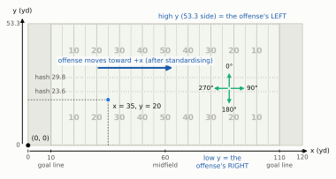
Four facts from that picture will save you hours:
- The origin is a corner, not the ball. Yard line numbers on the field (“the 25”) are not x values. The 25-yard line nearest x = 0 is x = 35; the one nearest x = 120 is x = 85. Everything you compute about the line of scrimmage starts by finding the ball’s x at the snap.
- Once the offense faces +x, high y is its left. Stand behind the quarterback looking toward x = 120: y = 53.3 is on your left hand, y = 0 on your right. So a receiver split wide to the offense’s right has a smaller y than the ball, and “w yards to the offense’s right”, the number every diagram in this book is drawn in, is
ball_y − y. Keep this one in your head; half the sign errors in tracking code come from it. - The field is 160 feet wide, which is 53⅓ yards. The files round it to 53.3. That gap of a few centimetres never matters for football, but it does matter for code: use one constant everywhere, or a play flipped twice will not land where it started.
gridironuses the exact 160/3. - Angles are compass-like, but not math-like. School trigonometry measures angles counter-clockwise from the x axis. Tracking angles run clockwise from the +y direction. To turn an angle into a direction vector, use
dx = sin(angle),dy = cos(angle), not the other way round. Get this wrong and every receiver appears to run sideways. For an offense heading toward +x, 90 degrees is straight downfield, 270 straight back toward its own end zone, 0 toward its left sideline and 180 toward its right.
The columns
Now the file itself. Here is the simulated play this chapter follows from start to finish, the chapter play: an 11-personnel 2x2 set (one back, one tight end, three receivers, two on each side), with the tight end Y flexed off the line into the right slot and the slot receiver H, on the left, sent in motion across the formation. The defense is a nickel that shows two-high safeties and rotates at the snap into a Cover 1 robber look: one safety spins to the deep middle, the other comes down into the middle of the field as a robber, and four defenders play man: the two corners on the outside receivers, the nickel on H (so he runs across the formation with the motion), and the Will linebacker on the tight end. The Mike sits in the middle watching the back. The quarterback throws a comeback to Z, the receiver wide to the right, on time: the ball leaves his hand as Z reaches the top of his stem (the straight, vertical part of his route), before he breaks back toward the sideline.
The corners are the one thing the library cannot do for us. Its man-coverage helper glues a defender to his receiver within about a second and a half, which is fine for a nickel on a slot but wrong for an off-coverage corner, who starts seven yards away and gives ground on purpose so nobody runs past him. So the play below steers both corners through timed waypoints with a small helper, timed_path(): backpedal, turn and run, then plant and drive on the ball.
def timed_path(p, key, keyframes):
"""Move defender `key` through (t, d, w) keyframes, t in seconds after the snap."""
t_now, wait = 0.0, 0.0
cur = np.array([p.players[key].d, p.players[key].w])
for t, d, w in keyframes:
dist = float(np.hypot(d - cur[0], w - cur[1]))
if dist < 0.05: # standing still: wait, then go
wait += t - t_now
else:
p.path(key, [(d, w)], absolute=True, speed=dist / (t - t_now), delay=wait)
wait = 0.0
t_now, cur = t, np.array([d, w])
return p
def chapter_play(target="Z", t_throw=2.1, los=45, diagram=False):
"""The chapter play: 11 personnel 2x2 vs a nickel two-high shell that rotates to Cover 1 robber.
diagram=True draws each corner's and Z's path as one line (same spots, no timing)."""
off = offense("gun_2x2")
dfn = defense("nickel", "two_high", off)
spot = {"NB": (5.5, -8.3), "WILL": (5.0, 6.0), "MIKE": (4.5, 0.5), # nickel over H, Will over Y
"LCB": (7.0, -15.8), "RCB": (7.0, 15.8), "FS": (13.0, -6.0), "SS": (13.0, 6.0)}
dfn = [q.moved(d=spot[q.key][0], w=spot[q.key][1]) if q.key in spot else q for q in dfn]
p = Play(off, dfn, los=los, to_go=10, title="The chapter play")
# before the snap: the safeties bounce in place, then H motions across the formation
p.motion("FS", to=(13.3, -5.8), speed=0.1)
p.motion("SS", to=(12.8, 5.9), speed=0.07)
p.motion("H", to=(-2.2, 3.5), speed=6.0) # still moving at the snap
# protection: tackles kick back, the line gives ground late; the back checks the A/B gap
for k, pts in {"LT": [(-1.6, -1.0), (-3.2, -0.5), (-4.6, 0.6)], "LG": [(-1.2, -0.3), (-2.4, 0.2)],
"C": [(-1.0, 0.0), (-2.0, 0.0)], "RG": [(-1.2, 0.3), (-2.4, -0.2)],
"RT": [(-1.6, 1.0), (-3.2, 0.5), (-4.4, -0.5)]}.items():
p.block(k, pts=pts)
p.block("RB", pts=[(0.4, 0.5)]) # up and inside the left guard
for k, pts in {"WDE": [(-2.0, -1.8), (-4.8, -0.8), (-7.6, 2.2)],
"WDT": [(-1.6, 0.0), (-3.0, 0.3)], "SDT": [(-1.5, 0.2), (-3.0, -0.2)],
"SDE": [(-2.0, 1.8), (-4.6, 0.9), (-7.4, -1.8)]}.items():
p.rush(k, pts=pts, speed=4.4)
p.dropback(3.0) # a shotgun three-step drop
p.route("X", r.go(24))
if diagram:
p.route("Z", r.path((14, 0), (11.5, 2.5), (10.7, 3.0)), speed=6.4)
else:
p.route("Z", r.comeback(14), speed=6.4) # 14 up, back 2.5 toward the sideline
p.route("Z", [(-0.8, 0.5)], speed=1.5) # ... and keep working back to the ball
p.route("Y", r.seam(18)); p.route("H", r.arrow(3, 6))
p.man("NB", "H"); p.man("WILL", "Y") # the nickel travels with the motion
# off-man corners: backpedal, turn and run, keep a cushion; the right one plants on the comeback
corners = {"LCB": [(1.0, 9.3, -15.8), (2.0, 15.4, -16.1), (3.4, 25.0, -16.2)],
"RCB": [(1.2, 10.0, 15.6), (2.0, 14.0, 16.0), (2.5, 16.2, 16.3),
(3.1, 12.4, 17.8), (3.6, 11.3, 18.5)]}
for key, kf in corners.items():
if diagram:
p.path(key, [(d, w) for _, d, w in kf], absolute=True)
else:
timed_path(p, key, kf)
p.drop("MIKE", (5.5, 0.0), speed=2.0) # sits in the middle, eyes on the back
p.drop("FS", (16.5, 0.0), speed=6.5) # spins to the deep middle at the snap
p.drop("SS", (10.0, 2.0), speed=5.5) # comes down as the robber
p.pass_to(target, t=t_throw)
return p
chapter_play(diagram=True).draw(legend=True, width_in=6.2, window=(-9.5, 29), lateral=(-20, 21))
plt.show()
play = chapter_play() # the timed version, for the tracking files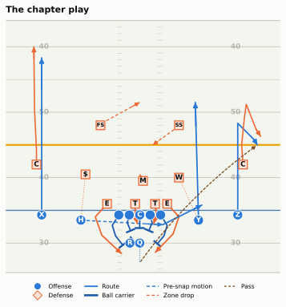
A gridiron play can write itself out as tracking rows. A folded helper, as_bdb_rows(), does that and then makes the rows look like a real Big Data Bowl 2025 file: it adds the sensor wobble real chips have, adds which way each player is facing (the simulator moves dots but does not turn shoulders), turns the play around so that this offense is going toward the left end zone, as half of all real plays do, and write_week() writes the three files a real download would contain: tracking_week_1.csv, plays.csv and players.csv.
Show the simulator (a gridiron Play written out as Big Data Bowl 2025 files)
JERSEY = {"QB": 7, "RB": 22, "X": 11, "H": 84, "Y": 88, "Z": 17, "LT": 71, "LG": 65, "C": 60,
"RG": 64, "RT": 76, "WDE": 91, "WDT": 97, "SDT": 95, "SDE": 99, "MIKE": 54, "WILL": 50,
"LCB": 24, "RCB": 21, "NB": 29, "FS": 31, "SS": 33}
POSITION = {"QB": "QB", "RB": "RB", "X": "WR", "Z": "WR", "H": "WR", "Y": "TE", "LT": "T", "RT": "T",
"LG": "G", "RG": "G", "C": "C", "WDE": "DE", "SDE": "DE", "WDT": "DT", "SDT": "DT",
"MIKE": "ILB", "WILL": "ILB", "LCB": "CB", "RCB": "CB", "NB": "CB", "FS": "FS", "SS": "SS"}
COLUMNS = ["gameId", "playId", "nflId", "displayName", "frameId", "frameType", "time", "jerseyNumber",
"club", "playDirection", "x", "y", "s", "a", "dis", "o", "dir", "event"]
def bdb_angle(vx, vy):
"""Tracking angle of a velocity: degrees clockwise from +y (0 = toward +y, 90 = toward +x)."""
return (90 - np.degrees(np.arctan2(vy, vx))) % 360
def as_bdb_rows(p, game_id, play_id, direction="left", seed=0, wobble=0.015):
"""A gridiron Play as rows of a BDB 2025 tracking_week_N.csv (camelCase columns)."""
rng = np.random.default_rng(seed)
t = p.to_tracking(fps=FPS, game_id=game_id, play_id=play_id)
passes = [(to, te) for kind, to, te in p.ball_events if kind == "pass"]
out = []
for key, g in t.groupby("displayName", sort=False):
g = g.sort_values("frameId").copy()
if key != "football":
g["x"] += rng.normal(0, wobble, len(g)) # chips wobble a little, even at rest
g["y"] += rng.normal(0, wobble, len(g))
# speed and direction from backward differences averaged over three frames
dx, dy = np.diff(g["x"].to_numpy()), np.diff(g["y"].to_numpy())
smooth = lambda v: pd.Series(v).rolling(3, min_periods=1).mean().to_numpy() # noqa: E731
vx, vy = smooth(np.r_[dx[0], dx] * FPS), smooth(np.r_[dy[0], dy] * FPS)
g["s"] = np.hypot(vx, vy)
g["a"] = np.abs(np.r_[0.0, np.diff(g["s"].to_numpy())] * FPS)
g["dis"] = np.r_[0.0, np.hypot(dx, dy)]
g["dir"] = bdb_angle(vx, vy)
facing = 90.0 if g["side"].iloc[0] == "off" else 270.0 # toward the other team
o = np.where(g["s"] > 1.5, g["dir"], facing) # running: face where you go
if key == "QB" and passes:
o = np.where(g["time"] <= passes[0][1], 90.0, o) # chest downfield until he throws
if POSITION[key] in ("CB", "FS", "SS", "ILB"):
away = np.cos(np.radians(g["dir"] - 90)) > 0.5 # moving away from the line
backpedal = (g["s"] < 3.2) & away & (g["time"] > 0)
o = np.where((g["time"] < 0.9) | backpedal, 270.0, o) # facing the quarterback
g["o"] = (o + rng.normal(0, 3, len(g))) % 360
out.append(g)
t = pd.concat(out)
# events a real file carries: line set, motion, snap, throw, arrival, catch
ev = t.set_index(["displayName", "frameId"])["event"].copy()
mot = [a for a in p.actions if a.kind == "motion" and p.players[a.key].side == "off"]
if mot:
f_mot = int(round(min(a.t0 for a in mot) * FPS)) + int(-t["time"].min() * FPS + 1.5)
ev.loc[("football", f_mot)] = "man_in_motion"
ev.loc[("football", max(1, f_mot - 6))] = "line_set"
if passes:
to, te = passes[0]
ball = t[t["displayName"] == "football"].set_index("frameId")
rec = t[t["displayName"] == to].set_index("frameId")
gap = np.hypot(ball["x"] - rec["x"], ball["y"] - rec["y"])
f_arr = int(gap[(ball["time"] > te) & (gap < 0.6)].index.min())
ev.loc[("football", f_arr)] = "pass_arrived"
ev.loc[("football", f_arr + 1)] = "pass_outcome_caught"
t["event"] = ev.reindex(pd.MultiIndex.from_frame(t[["displayName", "frameId"]])).to_numpy()
# a real file stores events on every player's row for that frame
first_event = lambda s: s.dropna().iloc[0] if s.notna().any() else None # noqa: E731
t["event"] = t.groupby("frameId")["event"].transform(first_event)
if direction == "left": # turn the play around: heading to x = 0
t["x"], t["y"] = 120 - t["x"], FIELD_WIDTH - t["y"]
t["o"], t["dir"] = (t["o"] + 180) % 360, (t["dir"] + 180) % 360
t["playDirection"] = direction
t["jerseyNumber"] = t["displayName"].map(JERSEY)
t0 = pd.Timestamp("2026-09-13 13:02:11")
stamp = t0 + pd.to_timedelta((t["frameId"] - 1) / FPS, unit="s")
t["time"] = stamp.dt.strftime("%Y-%m-%d %H:%M:%S.%f")
for c in ("x", "y", "s", "a", "dis", "o", "dir"):
t[c] = t[c].round(2)
return t.sort_values(["frameId", "nflId"], na_position="last")[COLUMNS]
def write_week(folder, games):
"""Write tracking_week_1.csv, plays.csv and players.csv for (play_id, Play, direction, meta)."""
rows, plays, people = [], [], {}
for play_id, p, direction, meta in games:
rows.append(as_bdb_rows(p, 2026091300, play_id, direction, seed=play_id))
plays.append({"gameId": 2026091300, "playId": play_id, "possessionTeam": "OFF",
"defensiveTeam": "DEF", **meta})
for i, key in enumerate(p.players):
people[1000 + i] = (key, POSITION[key])
pd.concat(rows).to_csv(folder / "tracking_week_1.csv", index=False)
pd.DataFrame(plays).to_csv(folder / "plays.csv", index=False)
roster = pd.DataFrame([(k, n, pos) for k, (n, pos) in people.items()],
columns=["nflId", "displayName", "position"])
roster.to_csv(folder / "players.csv", index=False)write_week(SIM, [(101, play, "left", {"playDescription": "(simulated) QB pass short right to Z",
"pff_passCoverage": "Cover-1", "pff_manZone": "Man"})])
print(sorted(f.name for f in SIM.iterdir()))['players.csv', 'plays.csv', 'tracking_week_1.csv']Now load it exactly as you would load a real week, and look at one player’s rows: a few from the start of the recording, then the snap and the frames just after it.
raw = pd.read_csv(SIM / "tracking_week_1.csv")
cb = raw[raw["displayName"] == "LCB"].sort_values("frameId")
f_snap = int(cb.loc[cb["frameType"] == "SNAP", "frameId"].iloc[0])
show_frames = [1, 2, 3, f_snap, f_snap + 1, f_snap + 2, f_snap + 7]
print("club:", cb["club"].iloc[0], "| playDirection:", cb["playDirection"].iloc[0])
cols = ["frameId", "frameType", "x", "y", "s", "a", "dis", "o", "dir", "event"]
md_table(cb[cb["frameId"].isin(show_frames)][cols].fillna(""))club: DEF | playDirection: left| frameId | frameType | x | y | s | a | dis | o | dir | event |
|---|---|---|---|---|---|---|---|---|---|
| 1 | BEFORE_SNAP | 67.99 | 10.88 | 0.21 | 0 | 0 | 87.53 | 184.31 | |
| 2 | BEFORE_SNAP | 67.99 | 10.86 | 0.21 | 0 | 0.02 | 91.24 | 184.31 | |
| 3 | BEFORE_SNAP | 68 | 10.86 | 0.14 | 0.64 | 0.01 | 86.16 | 165.54 | |
| 38 | SNAP | 68.03 | 10.84 | 0.1 | 0.34 | 0.03 | 90.99 | 89.22 | ball_snap |
| 39 | AFTER_SNAP | 67.76 | 10.87 | 0.78 | 6.73 | 0.27 | 89.97 | 275.79 | |
| 40 | AFTER_SNAP | 67.54 | 10.87 | 1.58 | 8.03 | 0.22 | 89.18 | 269.25 | |
| 45 | AFTER_SNAP | 66.41 | 10.89 | 2.19 | 0.7 | 0.22 | 92.49 | 273.19 |
Read the columns from left to right:
| Column | Meaning | Units |
|---|---|---|
gameId, playId |
Which game and which play. Together they identify a play everywhere in the release. | |
nflId, displayName, jerseyNumber, club |
Who the row is about. The ball has its own rows, with displayName “football” and no nflId. |
|
frameId |
The frame number, counting from 1 at the start of the play’s recording. | 0.1 s per frame |
frameType |
BEFORE_SNAP, SNAP or AFTER_SNAP (Big Data Bowl 2025 files). |
|
time |
In the raw file, the wall-clock timestamp of the frame. (gridiron.bdb.prepare(), used below, replaces it with seconds from the snap: negative before, positive after.) |
|
playDirection |
Which end zone the offense was heading for: right (toward x = 120) or left. |
|
x, y |
Position on the grid above. | yards |
s |
Speed. | yards per second |
a |
Acceleration (its size, not its direction). | yards per second² |
dis |
Distance travelled since the previous frame. | yards |
o |
Orientation: the way the player’s shoulders face. | degrees |
dir |
Direction: the way he is moving. | degrees |
event |
What happened on that frame, when anything did: line_set, man_in_motion, ball_snap, pass_forward, pass_arrived, pass_outcome_caught, tackle and so on. |
Speeds are in yards per second, which few people have a feel for. Multiply by about 2.05 to get miles per hour: a receiver at full speed runs about 9 to 10 yards a second (18 to 21 mph), and the fastest ball carriers each season touch about 11 (around 22 mph, the numbers broadcasts love). A quarterback’s dropback is 3 to 4 yards a second; a corner’s backpedal a little slower.
Notice three things in the corner’s rows (he is the left cornerback, and on this play the offense is going toward x = 0, so downfield for the offense means smaller x). First, in the early, pre-snap frames he is standing still, yet s is not exactly zero and dir jumps around: that is the sensor wobble. When a player is not moving, his direction is meaningless, so any feature built on dir should ignore frames with s below about 1 yard a second (the same threshold the motion rule uses later). Second, by seven frames after the snap he is moving at about 2.2 yards a second with dir near 273 (toward x = 0, away from the line: he is backpedalling), while his o stays near 92 (he is facing the offense). Direction and orientation point almost opposite ways. That is the most important subtlety in the file, and it gets its own section next.
Third, look at a just after the snap: 8.2 yards per second², more than one g. No cornerback accelerates like that. It is an artefact of the simulator, which starts a player at full backpedal speed instantly, and of computing acceleration as the change in speed from one tenth of a second to the next. Real chips produce a milder version of the same problem, because differencing amplifies noise: a position wobble of a centimetre or two becomes a speed wobble of a few tenths of a yard per second (each difference is divided by 0.1 s), and differencing speed again to get acceleration amplifies it once more. The cure is to smooth the positions before you difference them:
def speed_from_xy(g, window=1):
"""Speed (yd/s) from positions, after a centred rolling mean over `window` frames."""
g = g.sort_values("frameId")
x = g["x"].rolling(window, center=True, min_periods=1).mean()
y = g["y"].rolling(window, center=True, min_periods=1).mean()
return np.hypot(x.diff(), y.diff()) * FPS
cb = cb.assign(s_raw=speed_from_xy(cb, 1), s_smooth=speed_from_xy(cb, 5))
still = cb[cb["frameType"] == "BEFORE_SNAP"].iloc[5:] # standing still before the snap
print(f"standing still, unsmoothed: speed {still['s_raw'].mean():.2f} yd/s on average, "
f"acceleration {(still['s_raw'].diff().abs() * FPS).mean():.1f} yd/s²")
print(f"standing still, smoothed over 5 frames: speed {still['s_smooth'].mean():.2f} yd/s, "
f"acceleration {(still['s_smooth'].diff().abs() * FPS).mean():.1f} yd/s²")standing still, unsmoothed: speed 0.26 yd/s on average, acceleration 1.4 yd/s²
standing still, smoothed over 5 frames: speed 0.07 yd/s, acceleration 0.4 yd/s²A five-frame rolling mean (half a second) is the bluntest tool that works; analysts who need sharper timing use a Savitzky-Golay filter, which fits a short polynomial through each window and keeps quick changes of direction better. Either way, the release’s own s, a and dir columns are already derived numbers, so when you compute your own from x and y, smooth first and say how.
Orientation versus direction
Orientation vs direction is the difference between where a player faces (o) and where he goes (dir). Most of the time they agree: a receiver sprinting downfield faces downfield. But football is full of players moving one way while looking another, and those are exactly the players you want to understand.
To draw the play we need it in a friendlier shape, and gridiron.bdb.prepare() does that in one call. It does three jobs that the next two sections build by hand: it flips the play so the offense moves toward +x, it marks each row as offense, defense or ball, and it rewrites time as seconds from the snap. The cell then adds a few columns of our own: the position letters for the pictures, d and w (yards downfield of the ball and yards to the offense’s right of it, the frame every diagram in this book is drawn in), and frame_rel, frames from the snap. Every later section uses this one table.
trk = bdb.load_tracking(str(SIM / "tracking_week_*.csv")) # the same call works on real files
plays_csv = pd.read_csv(SIM / "plays.csv")
one = bdb.prepare(trk, plays_csv, game_id=2026091300, play_id=101) # flipped: offense moves to +x
one["label"] = one["displayName"].map({k: q.label for k, q in play.players.items()}).fillna("")
snap_ball = one[(one["frameType"] == "SNAP") & (one["side"] == "ball")].iloc[0]
LOS, BALL_Y = float(snap_ball["x"]), float(snap_ball["y"])
one["d"], one["w"] = one["x"] - LOS, BALL_Y - one["y"] # high y is the offense's left
one["frame_rel"] = np.round(one["time"] * FPS).astype(int) # frames from the snap
EVENT_T = one.dropna(subset=["event"]).drop_duplicates("event").set_index("event")["time"]
T_THROW, T_ARR = float(EVENT_T["pass_forward"]), float(EVENT_T["pass_arrived"])
print(f"line of scrimmage x = {LOS:.1f}, ball y = {BALL_Y:.1f}; "
f"throw {T_THROW:.1f} s and catch {T_ARR:.1f} s after the snap")line of scrimmage x = 45.0, ball y = 26.7; throw 2.1 s and catch 3.5 s after the snapShow the plotting code
def arrow_vec(theta, length):
"""A tracking angle as a vector in the vertical (offense-up) diagram view."""
rad = np.radians(theta)
return -np.cos(rad) * length, np.sin(rad) * length
def plot_orientation(frames, frame_rel=6):
fig, ax = plt.subplots(figsize=(6.5, 4.6))
fld = Field(ax=ax, orient="vertical", los=LOS, window=(-13, 20), to_go=10,
lateral=(BALL_Y - 24, BALL_Y + 24))
now = frames[(frames["frame_rel"] == frame_rel) & (frames["side"] != "ball")]
trails = frames[frames["frame_rel"].between(0, frame_rel) & (frames["side"] != "ball")]
draw_frame(fld, now, trails.assign(_id=trails["displayName"]))
notes = {"QB": ("QB: chest downfield (o ≈ 90°),\nmoving straight back (dir ≈ 270°)", (-10.0, -12.0)),
"FS": ("FS: faces the QB (o ≈ 270°),\nruns to the middle (dir ≈ 150°)", (17.0, -13.0)),
"WDE": ("End on the offense's left:\nfaces and moves the same way", (3.0, -17.0))}
for key, (txt, (d_, w_)) in notes.items():
row = now[now["displayName"] == key].iloc[0]
px, py = fld.xy(row["x"], row["y"])
for ang, col, ls in ((row["o"], style.INK, "-"), (row["dir"], style.THIRD, (0, (3, 1.5)))):
dx, dy = arrow_vec(ang, 5.0)
ax.add_patch(FancyArrowPatch((px, py), (px + dx, py + dy), arrowstyle="-|>",
mutation_scale=11, color=col, lw=2.2, ls=ls, zorder=13))
tx, ty = fld.xy(LOS + d_, BALL_Y - w_)
ax.text(tx, ty, txt, ha="center", va="center", fontsize=7, color=style.INK, zorder=14,
bbox=dict(boxstyle="round,pad=0.25", fc=style.SURFACE, ec=style.BASELINE, lw=0.6))
ax.legend(handles=[Line2D([], [], color=style.INK, lw=2.2, label="o: where he faces"),
Line2D([], [], color=style.THIRD, lw=2.2, ls=(0, (3, 1.5)),
label="dir: where he moves")],
loc="lower right", fontsize=7.5, frameon=True, facecolor=style.SURFACE, framealpha=1)
plt.show()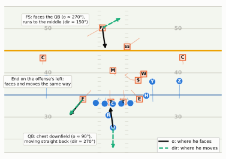
Where does this matter? Everywhere a defender reads the play. A corner in off coverage gives ground with his shoulders square to the line of scrimmage; the instant he turns (his o swings toward his dir) he has committed, and a receiver who breaks at that moment wins. A zone defender keeps his shoulders open to the quarterback as he drops; a man defender turns his shoulders to run with his receiver. A pass rusher who has been turned sideways by a blocker is moving toward the quarterback but facing the sideline. Remember, though, that o is the chest, not the eyes: a man corner looking at his receiver’s hips and a zone corner reading the quarterback can have exactly the same o. Several Big Data Bowl entries have built their best features from the gap between the two angles.
Standardising play direction
Half of all plays go left. If you average where the free safety lines up on a thousand plays without fixing that, half of him is at x = 70 and half at x = 50, and the average puts him on the ball. The fix is the first thing every tracking analysis does.
Standardised play direction means rotating every play that went toward the left end zone by 180 degrees, so that all plays move left to right. A rotation needs both coordinates flipped and both angles turned around:
def standardise(df):
"""Rotate plays with playDirection == 'left' by 180 degrees, so every offense moves toward +x."""
df = df.copy()
left = df["playDirection"] == "left"
df.loc[left, "x"] = 120 - df.loc[left, "x"]
df.loc[left, "y"] = FIELD_WIDTH - df.loc[left, "y"] # flip y too: a rotation, not a mirror
for col in ("o", "dir"):
df.loc[left, col] = (df.loc[left, col] + 180) % 360
df.loc[left, "playDirection"] = "right"
return df
mine = standardise(trk)
theirs = bdb.normalize_direction(trk) # gridiron's version of the same function
print("largest difference from gridiron's version:",
float((mine[["x", "y"]] - theirs[["x", "y"]]).abs().max().max()), "yards")largest difference from gridiron's version: 0.0 yardsWhy flip y as well as x? Picture yourself standing behind the offense. If you flip only x, the offense now faces the other way but the receiver who was on the quarterback’s left is still at the same y, and from the quarterback’s new point of view that is his right. You have made a mirror image, and every left-handed fact about the play (which hash, which side the tight end is on, the boundary) is now wrong. Flipping both is a half-turn of the whole field: nothing changes sides.
Show the plotting code
def plot_standardise(snap_raw, keys=("X", "Z", "QB", "FS", "SS")):
views = {"(a) as recorded: playDirection = left": snap_raw,
"(b) x flipped only: a mirror image": snap_raw.assign(x=120 - snap_raw["x"]),
"(c) x and y flipped: standardised": standardise(snap_raw)}
fig, axes = plt.subplots(2, 2, figsize=(6.5, 3.9))
for ax, (name, df) in zip(axes.flat[:3], views.items()):
Field(ax=ax, orient="horizontal", window=None, numbers=False)
heading = -1 if "(a)" in name else 1 # which way this offense is moving
for key in list(keys) + ["football"]:
row = df[df["displayName"] == key].iloc[0]
side = {"OFF": "off", "DEF": "def"}.get(row["club"], "ball")
if side == "ball":
ax.plot(row["x"], row["y"], "o", color=style.BALL, ms=3, zorder=11)
continue
draw_marker(ax, row["x"], row["y"], side, "", 1.0, r=2.2)
ax.text(row["x"] - heading * 3.4, row["y"], key, ha="left" if heading < 0 else "right",
va="center", fontsize=6.5, color=style.INK, zorder=12) # label behind the dot
ball = df[df["displayName"] == "football"].iloc[0]
tail, tip = (ball["x"] + heading * 2, ball["y"]), (ball["x"] + heading * 8, ball["y"])
ax.add_patch(FancyArrowPatch(tail, tip, arrowstyle="-|>", mutation_scale=8,
color=style.OFFENSE_DARK, lw=1.4, zorder=6))
ax.set_title(name, fontsize=7.5, loc="left", color=style.INK)
ax = axes.flat[3]
Field(ax=ax, orient="vertical", los=45, window=(-8, 18.5), lateral=(0, FIELD_WIDTH), numbers=False)
st = standardise(snap_raw)
for key in keys:
row = st[st["displayName"] == key].iloc[0]
px, py = FIELD_WIDTH - row["y"], row["x"]
draw_marker(ax, px, py, "off" if row["club"] == "OFF" else "def", "", 1.0, r=1.4)
ax.text(px, py + 2.0, key, ha="center", va="bottom", fontsize=6.5, color=style.INK, zorder=12,
bbox=dict(boxstyle="round,pad=0.1", fc=style.SURFACE, ec="none", alpha=0.9))
ax.set_title("(d) the diagram frame: d = x − LOS, w = ball y − y", fontsize=7.5, loc="left")
fig.tight_layout()
plt.show()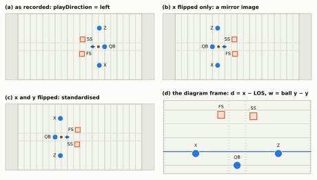
Panel (d) is worth a second look. Every diagram in this book is authored in two numbers: d, yards downfield of the line of scrimmage, and w, yards to the offense’s right of the ball. After standardising, those are just x − LOS and ball_y − y at the snap (the minus sign is the “high y is the offense’s left” fact from the grid). That is not a coincidence: the library was built so that a play a coach draws and a play the chips record are the same kind of object, and one drawing routine serves both.
ImportantWhy it exists
Every question worth asking of tracking data is a comparison: this safety against that one, this week against last, this team against the league. Comparisons need a common frame, and the raw files don’t give you one: the same coverage looks like two opposite pictures depending on which end zone the offense faced. Standardising costs nothing and loses nothing (it is reversible), but forget it once and every average in the analysis is meaningless.
Lining plays up: the snap and the throw
The second alignment problem is time. Frame 1 is wherever recording started, which differs from play to play: one play has three seconds of frames before the snap, another twelve. So the next step is to re-number frames relative to an event: frame_rel = frameId − frameId of the event. Frame 0 is then the event itself, negative frames come before it, positive after.
The snap is the natural zero for most questions: pre-snap disguise, motion, how fast the rushers get off the ball. But many passing questions are really about the throw: how open was the receiver when the ball left the hand, how close was the pressure then. Quarterbacks throw anywhere from about 1.5 to over 4 seconds after the snap, so a chart aligned on the snap smears the moment you care about across thirty frames. Aligned on the throw, it lines up.
rng = np.random.default_rng(5)
choices = {"H": (1.4, 1.9), "Y": (1.9, 2.5), "Z": (2.0, 2.4), "X": (2.6, 3.2)} # throw times, s
rows = []
for pid in range(40):
target = rng.choice(list(choices))
p = chapter_play(target=target, t_throw=float(rng.uniform(*choices[target])))
ball = p.to_tracking(fps=FPS, play_id=pid).query("displayName == 'football'").copy()
f_snap = int(ball.loc[ball["event"] == "ball_snap", "frameId"].iloc[0])
f_throw = int(ball.loc[ball["event"] == "pass_forward", "frameId"].iloc[0])
ball["since_snap"] = ball["frameId"] - f_snap
ball["since_throw"] = ball["frameId"] - f_throw
ball["depth"] = ball["x"] - p.los
rows.append(ball.assign(target=target))
balls = pd.concat(rows)Show the plotting code
def plot_align(balls):
fig, axes = plt.subplots(1, 2, figsize=(6.5, 3.0), sharey=True)
for ax, col, lab in ((axes[0], "since_snap", "Frames since the snap"),
(axes[1], "since_throw", "Frames since the throw")):
for _, g in balls.groupby("playId"):
g = g[g[col].between(-10, 22) if col == "since_throw" else g[col].between(0, 42)]
ax.plot(g[col], g["depth"], color=style.SERIES[0], lw=0.8, alpha=0.5)
ax.axvline(0, color=style.INK_2, lw=1)
ax.axhline(0, color=style.BASELINE, lw=0.8)
ax.set_xlabel(lab, fontsize=8.5)
axes[0].annotate("snap: the ball goes\nback to the QB", (2, -7.5), xytext=(9, -11.5), fontsize=7,
color=style.INK_2, arrowprops=dict(arrowstyle="-", color=style.INK_2, lw=0.6))
axes[0].set_ylabel("Ball, yards past the line of scrimmage", fontsize=8.5)
axes[0].set_title("Aligned on the snap", fontsize=9.5)
axes[1].set_title("Aligned on the throw", fontsize=9.5)
axes[0].set_ylim(-13, None)
fig.tight_layout()
plt.show()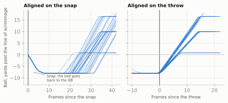
In code, alignment is a merge: find each play’s event frame once, join it back, subtract.
def align(frames, event="ball_snap"):
"""Add frame_rel: frames since `event` (negative = before it). Plays without the event drop out."""
ev = (frames.loc[frames["event"] == event, ["gameId", "playId", "frameId"]]
.drop_duplicates(["gameId", "playId"]).rename(columns={"frameId": "f0"}))
out = frames.merge(ev, on=["gameId", "playId"])
out["frame_rel"] = out["frameId"] - out["f0"]
return out.drop(columns="f0")
at_throw = align(mine, "pass_forward")
print("frames before the throw:", -at_throw["frame_rel"].min(),
"| after:", at_throw["frame_rel"].max())frames before the throw: 58 | after: 21Those 58 frames before the throw are the whole recording up to it: about 3.7 seconds of pre-snap frames (the recording starts when the safeties begin to bounce and H prepares to go in motion) plus 2.1 seconds from the snap to the throw. On real files, the pre-snap part varies from play to play, which is the whole reason to align.
Two practical warnings. Events are not always where you expect. The snap event name has varied (ball_snap, and snap_direct for direct snaps to a back), a few plays are missing an event, and the 2025 files added a frameType column that marks the snap frame directly; gridiron.bdb.prepare() checks all three. The 2026 files split each play at the throw. The Big Data Bowl 2026 asked entrants to predict where players would go while the ball was in the air, so its input_ files hold the frames up to the throw and its output_ files hold the positions afterwards, with snake_case column names (game_id, play_id, nfl_id, frame_id, play_direction) instead of camelCase.7 There is no throw event to align on there: the throw is the seam between the two files, so the last input_ frame of a play is your frame 0. gridiron.bdb.load_tracking() renames the columns, but stitching the two halves back together is your job.
NoteGo deeper: getting the real files
Download. Create a Kaggle account, open the competition page (for example kaggle.com/competitions/nfl-big-data-bowl-2025) and accept the rules on the website; the download is refused until you do. Then either use the page’s “Download all” button or, with Kaggle’s command-line tool (pip install kaggle, plus an API token from your Kaggle account settings saved as ~/.kaggle/kaggle.json), run kaggle competitions download -c nfl-big-data-bowl-2025 and unzip into data/bdb/.
Size. Each tracking week holds 23 rows per frame, ten frames a second, for every play of every game that week, so a week runs to millions of rows. Load one week at a time, keep only the columns you need (pd.read_csv(..., usecols=[...])), and filter to your plays before anything else.
Quirks to check before you trust a result. Plays with no snap event; plays whose recording starts less than a second or two before the snap; the football’s rows, which have no nflId (code that groups by nflId silently drops the ball); and, in the 2026 files, the input/output split above.
Drawing and animating a play
Everything is now in place to look at a play. The one table from the orientation section is exactly the input the drawing functions expect, whether the frames came from Kaggle or from a simulation: one row per player per frame, standardised, with side, label and time from the snap.
show_play(one, [(-1.5, "−1.5 s: motion"), (0.0, "snap"), (T_THROW, f"+{T_THROW:.1f} s: the throw"),
(T_ARR, f"+{T_ARR:.1f} s: the catch")],
window=(-10, 29), lateral=(BALL_Y - 21.5, BALL_Y + 19.5))On the website that is a video you can scrub; in print it is four frames. Either way, notice what the picture shows that a coach’s diagram cannot: timing. The robber is in place by about one second. The quarterback releases the ball as Z reaches the top of his stem, before the break, trusting him to win it, and the ball is in the air for well over a second.
With a real Big Data Bowl 2025 download, the same picture of any play takes the same three calls.
# Download from https://www.kaggle.com/competitions/nfl-big-data-bowl-2025/data (accept the
# rules first) and unzip into data/bdb/. Files: games.csv, plays.csv, players.csv,
# player_play.csv and tracking_week_1.csv ... tracking_week_9.csv.
trk = bdb.load_tracking("data/bdb/tracking_week_1.csv")
plays = pd.read_csv("data/bdb/plays.csv")
players = pd.read_csv("data/bdb/players.csv")[["nflId", "position"]]
# pick a play by its description, e.g. the first charted Cover-1 dropback of week 1
in_week = plays["gameId"].isin(trk["gameId"].unique())
pick = plays[(plays["pff_passCoverage"] == "Cover-1") & in_week].iloc[0]
real = bdb.prepare(trk, plays, game_id=pick.gameId, play_id=pick.playId) # labels = jersey numbers
real = real.merge(players, on="nflId", how="left")
real["label"] = real["position"].fillna("") # or keep the numbers
print(pick.playDescription)
show_animation(real, times=[-1.5, 0.0, 1.5, 3.0])Expect a real play to look messier than the simulated one: players drift during the cadence, routes round off instead of breaking at sharp corners, and linemen bunch so tightly that their markers overlap. That mess is information, and every feature below is written to survive it.
Feature 1: separation
Separation is the distance from a receiver to the nearest defender. Next Gen Stats measures it at one moment, when the ball arrives (the catch or the incompletion), and averages it over a season.8 With frames you can measure it at every moment, which tells you much more than one number: when the receiver got open, and whether the defender closed the gap while the ball was in the air.
RECEIVERS = ["X", "H", "Y", "Z"]
def separation(frames, receivers=RECEIVERS):
"""Distance from each receiver to the nearest defender in every frame, and who that defender is."""
dfn = frames.loc[frames["side"] == "def", ["frameId", "displayName", "x", "y"]]
out = []
for key in receivers:
me = frames.loc[frames["displayName"] == key, ["frameId", "time", "x", "y"]]
pair = me.merge(dfn, on="frameId", suffixes=("", "_def"))
pair["sep"] = np.hypot(pair["x"] - pair["x_def"], pair["y"] - pair["y_def"])
best = pair.loc[pair.groupby("frameId")["sep"].idxmin()]
out.append(best.assign(receiver=key)[["frameId", "time", "receiver", "sep", "displayName"]])
return pd.concat(out, ignore_index=True).rename(columns={"displayName": "nearest"})
sep = separation(one)
z = sep[sep["receiver"] == "Z"].set_index("time")["sep"]
mid = z[(z.index > T_THROW) & (z.index < T_ARR)]
at = sep[np.isclose(sep["time"], T_THROW) | np.isclose(sep["time"], T_ARR)]
md_table(at.pivot(index="receiver", columns="time", values="sep")
.rename(columns={T_THROW: "at the throw", T_ARR: "at the catch"}).reset_index())| receiver | at the throw | at the catch |
|---|---|---|
| H | 1.95 | 2.02 |
| X | 1.51 | 2.07 |
| Y | 1.44 | 1.42 |
| Z | 2 | 1.6 |
Show the plotting code
def plot_separation(sep):
fig, ax = plt.subplots(figsize=(6.5, 3.4))
show = sep[sep["time"].between(0, T_ARR + 0.6)]
for k, (key, g) in enumerate(show.groupby("receiver", sort=False)):
ax.plot(g["time"], g["sep"], color=style.SERIES[k], lw=2.6 if key == "Z" else 1.4,
label=f"{key} (the target)" if key == "Z" else key, zorder=3 if key == "Z" else 2)
for t_, lab in ((T_THROW, "throw"), (T_ARR, "catch")):
ax.axvline(t_, color=style.INK_2, lw=1, ls=(0, (3, 2)))
ax.text(t_, 7.4, f" {lab}", fontsize=8, color=style.INK_2, va="top")
ax.set_xlabel("Seconds after the snap")
ax.set_ylabel("Yards to the nearest defender")
ax.set_xlim(0, T_ARR + 0.7)
ax.set_ylim(0, 9.4)
ax.set_title("Separation, frame by frame")
ax.legend(loc="upper right", fontsize=8, ncol=4, frameon=True, facecolor=style.SURFACE,
edgecolor="none", framealpha=1)
plt.show()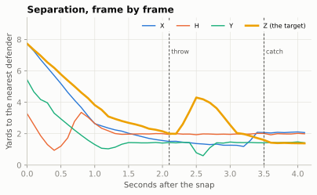
Two lessons hide in that chart.
Separation at the throw, at the catch and in between are three different numbers. The quarterback threw before the break, to a receiver who was not open yet: a timing throw, trusting Z to win it. Z was most open in mid-flight, about 4.3 yards, and the corner had cut that to about 1.6 by the catch. The NGS number you see on broadcasts is the last of the three. “Throwing receivers open” and “closing on the ball” are both real skills that a single snapshot hides, and measuring what happens while the ball is in the air was the whole point of the 2026 Big Data Bowl.
“Nearest defender” is not “covering defender.” On this play it is, because everyone near a receiver is in man. In zone coverage the nearest defender may be responsible for a different receiver entirely, and a receiver running past a linebacker who is dropping to his own zone looks covered for a frame or two. The cleaner measure, “distance to the defender assigned to him”, needs an assignment, and assignments are exactly what tracking does not record (the Big Data Bowl 2025 files add PFF’s charted matchups in player_play.csv for that reason).
What season-long separation really measures
NGS publishes each qualifying receiver’s average separation. Here is the 2025 season, plotted against how far downfield each player’s targets were.
ngs = nfl().load_nextgen_stats(seasons=list(range(2016, 2026)), stat_type="receiving").to_pandas()
season = ngs[(ngs["week"] == 0) & (ngs["season_type"] == "REG")]
rec25 = season[season["season"] == 2025].copy()
slope, icpt = np.polyfit(rec25["avg_intended_air_yards"], rec25["avg_separation"], 1)
r_air = np.corrcoef(rec25["avg_intended_air_yards"], rec25["avg_separation"])[0, 1]
by_player = season.pivot_table(index="player_gsis_id", columns="season", values="avg_separation")
yoy = by_player[[2024, 2025]].dropna() # receivers who qualified in both seasons
r_yoy = yoy.corr().iloc[0, 1]
rec25["resid"] = rec25["avg_separation"] - (icpt + slope * rec25["avg_intended_air_yards"])Show the plotting code
def plot_ngs_separation(rec25):
fig, ax = plt.subplots(figsize=(6.5, 3.9))
for k, pos in enumerate(["WR", "TE"]):
g = rec25[rec25["player_position"] == pos]
ax.scatter(g["avg_intended_air_yards"], g["avg_separation"], s=22, color=style.SERIES[k],
edgecolor=style.SURFACE, lw=0.6, zorder=3,
label={"WR": "Wide receivers", "TE": "Tight ends"}[pos])
xs = np.linspace(rec25["avg_intended_air_yards"].min(), rec25["avg_intended_air_yards"].max(), 10)
ax.plot(xs, icpt + slope * xs, color=style.INK_2, lw=1, ls=(0, (4, 2)), zorder=2)
low, high = rec25.nsmallest(2, "avg_separation"), rec25.nlargest(2, "avg_separation")
jsn = rec25[rec25["player_display_name"] == "Jaxon Smith-Njigba"]
offsets = [(14, -6), (14, 4), (6, 9), (14, -14), (12, 8)]
for (_, row), (ox, oy) in zip(pd.concat([low, high, jsn]).iterrows(), offsets):
ax.annotate(f"{row['player_display_name']} ({row['team_abbr']})",
(row["avg_intended_air_yards"], row["avg_separation"]), xytext=(ox, oy),
textcoords="offset points", fontsize=7, color=style.INK,
ha="left" if ox > 0 else "right", va="center",
arrowprops=dict(arrowstyle="-", color=style.INK_2, lw=0.6))
ax.set_xlabel("Average intended air yards (how deep his targets were)")
ax.set_ylabel("Average separation (yd)")
ax.set_title("Separation is mostly a route-depth stat")
ax.set_ylim(None, rec25["avg_separation"].max() + 0.35)
ax.legend(loc="upper right", fontsize=8)
plt.show()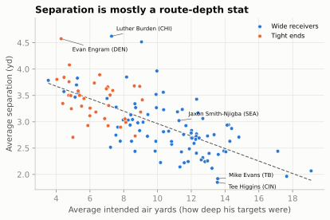
The correlation between depth of target and separation is -0.69: every extra yard of target depth costs about 0.12 yards of separation. So before you call a receiver “always open”, ask how deep he runs. A fairer reading is the gap between a receiver’s separation and the dashed line, separation for his depth. That is the same “over expected” idea you met with RYOE and CPOE, done with one variable instead of a model. Separation is also fairly stable: for receivers who qualified in both 2024 and 2025, the year-to-year correlation is 0.73, partly because route depth is a role that carries over.
Depth is not the only thing hiding in a season average. Separation reflects the play-caller as well as the receiver: motion, stacks, bunches, tight splits and play-action are all ways of manufacturing free releases and open throws, which is why receivers in motion-heavy offenses can post big numbers without being faster than anyone. And it reflects the receiver’s alignment: a receiver who lines up outside and sees press coverage and the opponent’s best corner every week will measure lower than a slot receiver running free against a linebacker.
th = rec25[rec25["player_display_name"] == "Tee Higgins"].iloc[0]
least = rec25.nsmallest(4, "avg_separation")[["player_display_name", "team_abbr", "avg_separation",
"avg_intended_air_yards", "targets", "catch_percentage",
"yards"]]
md_table(least.set_axis(["player", "team", "separation (yd)", "target depth (yd)", "targets",
"catch %", "yards"], axis=1), 2)| player | team | separation (yd) | target depth (yd) | targets | catch % | yards |
|---|---|---|---|---|---|---|
| Tee Higgins | CIN | 1.85 | 13.54 | 98 | 60.2 | 846 |
| Mike Evans | TB | 1.92 | 13.56 | 62 | 48.39 | 368 |
| Christian Watson | GB | 1.97 | 17.65 | 55 | 63.64 | 611 |
| Alec Pierce | IND | 2.07 | 19.09 | 84 | 55.95 | 1003 |
NoteFilm room: Cincinnati Bengals 2025
The player: Tee Higgins, who had the lowest average separation of any qualifying receiver in 2025 (1.85 yards) and still caught 60% of his 98 targets for 846 yards, on targets averaging 13.5 yards downfield.9
What to notice: low separation is not the same as “not open.” Some receivers win at the catch point, with size, body position and hands, and their quarterbacks throw to them when they are covered. Watch a Bengals game and look at where the ball goes when Higgins is tightly covered on a fade or a back-shoulder throw. Then look at where he lines up: an outside receiver facing tight coverage most weeks is measured against a harder baseline than a slot receiver. The number describes how he wins, not whether he does; that is what makes a tracking stat useful, and also what makes it easy to misread.
Feature 2: the pocket
Pass Protection drew the pocket as the shape enclosed by the five linemen and the quarterback (its convex hull, the smallest shape with no dents that contains all six), and showed it breathing over a dropback. Here is that idea as a number you can compute on every frame of every play, with a second number that answers the question the quarterback is actually asking: how close is the nearest defender?
The hull itself is standard geometry, so it is folded away below as hull(). In your own environment, scipy.spatial.ConvexHull(points).volume gives the same area in one line (for two-dimensional points SciPy’s “volume” is the area); this book’s container doesn’t install SciPy, so the helper does it by hand, exactly as 04-02 did.
Show the convex-hull helper (Andrew’s monotone chain and the shoelace formula)
def hull(points):
"""Convex hull of 2-D points, as an array of corners, and its area."""
pts = sorted(map(tuple, np.round(points, 4)))
def half(seq): # one side of the hull, keeping left turns
h = []
for q in seq:
while len(h) >= 2 and ((h[-1][0] - h[-2][0]) * (q[1] - h[-2][1])
- (h[-1][1] - h[-2][1]) * (q[0] - h[-2][0])) <= 0:
h.pop()
h.append(q)
return h
corners = np.array(half(pts)[:-1] + half(pts[::-1])[:-1])
x, y = corners[:, 0], corners[:, 1]
area = 0.5 * abs(np.dot(x, np.roll(y, -1)) - np.dot(y, np.roll(x, -1))) # shoelace formula
return corners, areaPOCKET = ["LT", "LG", "C", "RG", "RT", "QB"]
rows = []
for fid, g in one[one["frame_rel"].between(0, 30)].groupby("frameId"):
_, area = hull(g.loc[g["displayName"].isin(POCKET), ["x", "y"]].to_numpy())
qb = g.loc[g["displayName"] == "QB", ["x", "y"]].to_numpy()[0]
dfn = g.loc[g["side"] == "def", ["x", "y"]].to_numpy()
rows.append((g["time"].iloc[0], area, np.hypot(*(dfn - qb).T).min()))
pocket = pd.DataFrame(rows, columns=["time", "area", "nearest"])
print(pocket.iloc[[0, 10, 20]].round(1).to_string(index=False)) time area nearest
0.0 13.7 6.0
1.0 22.1 6.0
2.0 18.3 3.4Show the plotting code
def plot_pocket(one, pocket):
fig = plt.figure(figsize=(6.5, 3.7))
ax0 = fig.add_axes([0.0, 0.0, 0.46, 0.86])
ax1 = fig.add_axes([0.57, 0.56, 0.41, 0.34])
ax2 = fig.add_axes([0.57, 0.13, 0.41, 0.34], sharex=ax1)
fld = Field(ax=ax0, orient="vertical", los=LOS, window=(-11.0, 3.0),
lateral=(BALL_Y - 9.0, BALL_Y + 9.0), numbers=False)
f_throw = int(one.loc[np.isclose(one["time"], T_THROW), "frameId"].iloc[0])
moments = ((0.0, "at the snap", style.SERIES[0], (0, (1, 1.2))),
(1.0, "+1.0 s", style.SERIES[1], (0, (4, 2))),
(T_THROW, "at the throw", style.THIRD, "-"))
handles = []
for t_, lab, col, ls in moments:
g = one[np.isclose(one["time"], t_)]
corners, _ = hull(g.loc[g["displayName"].isin(POCKET), ["x", "y"]].to_numpy())
px, py = fld.xy(corners[:, 0], corners[:, 1])
if t_ == T_THROW: # shade the pocket at the throw, under the players
ax0.add_patch(Polygon(np.c_[px, py], fc=col, alpha=0.15, ec="none", zorder=3))
ax0.add_patch(Polygon(np.c_[px, py], fc="none", ec=col, lw=2.0, ls=ls, zorder=12))
handles.append(Line2D([], [], color=col, lw=2.0, ls=ls, label=f"hull {lab}"))
g = one[(one["frameId"] == f_throw) & (one["side"] != "ball")
& one["displayName"].isin(POCKET + ["RB", "WDE", "WDT", "SDT", "SDE"])]
draw_frame(fld, g)
ax0.legend(handles=handles, loc="upper center", bbox_to_anchor=(0.5, 1.13), ncol=3, fontsize=6.8,
frameon=False, handlelength=2.2, columnspacing=0.8)
ax1.plot(pocket["time"], pocket["area"], color=style.THIRD, lw=2)
ax1.set_ylabel("Hull area (sq yd)", fontsize=8)
ax2.plot(pocket["time"], pocket["nearest"], color=style.SERIES[1], lw=2)
ax2.set_ylabel("Nearest defender\nto QB (yd)", fontsize=8)
ax2.set_xlabel("Seconds after the snap", fontsize=8)
for a_ in (ax1, ax2):
a_.axvline(T_THROW, color=style.INK_2, lw=1, ls=(0, (3, 2)))
a_.tick_params(labelsize=7.5)
ax1.text(T_THROW, ax1.get_ylim()[1], " throw", fontsize=7.5, color=style.INK_2, va="top")
plt.setp(ax1.get_xticklabels(), visible=False)
plt.show()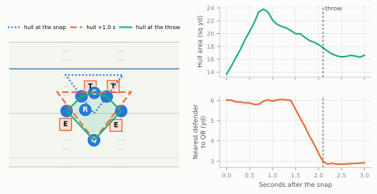
Each of these numbers is a simplification, and it is worth saying of what. The hull measures how much space is enclosed, not where it is. Quarterbacks feel pressure from the front: a defensive tackle who drives the center two yards straight back takes away the spot the quarterback wanted to step up into, yet the hull barely changes, because the center then sits inside the shape the guards, tackles and quarterback already enclose (he stops being a corner of it, and the area loses only the sliver he used to add). The nearest defender ignores who is blocking him: a rusher two yards away and locked up by a tackle is no threat, a blitzer three yards away and unblocked is. The tracking-based “win rates” ESPN publishes (pass rush win rate for one) solve that by asking a more specific question, whether a rusher has beaten his blocker within 2.5 seconds, and The Pass Rush shows how to compute get-off and time to pressure from the same frames.
Feature 3: motion at the snap
Motion and Shifts explained why offenses send a player across the formation, and why motion at the snap (a player still moving when the ball is snapped) has exploded: PFF counted shifts or motion on 63.9% of plays in 2025, up from 43.0% in 2018.10 Charting services decide by eye whether a play had motion, and their definitions differ: FTN’s is_motion flag in nflverse means motion “before or at” the snap, does not count shifts the way PFF’s “shift or motion” figure does, and runs lower (55% of 2025 plays against PFF’s 64%). Tracking data lets you write your own definition and apply it the same way to every play.
The rule is short. A player is in motion at the snap if he is moving faster than some threshold in the snap frame. The rulebook narrows who to check: only one player may be in motion at the snap, he must be an off-the-line (backfield) player, and he may not be moving toward the line. Linemen can’t be moving at the snap and the quarterback almost never is, so leave them out; their small movements are just noise. That rule also gives you a free data-quality check: if two or more skill players are above the threshold in the snap frame, you have found a shift that wasn’t set for a full second (a flag), a mislabelled snap frame, or a tracking glitch, and the play deserves a look.
A shift is different: several players reset, then everyone is still for a second before the snap. To find it you need the line_set event, the frame at which the offensive line has settled into its stances. Skill players are free to shift or go in motion after it (that is why the charted columns below are called shiftSinceLineset and motionSinceLineset), so a shift shows up as a player who has moved a few yards since line_set but is stationary at the snap.
SKILL = ["X", "H", "Y", "Z", "RB"]
THRESH = 1.0 # yards per second; wobble at rest is ~0.2-0.3
at_snap = one[(one["frameType"] == "SNAP") & one["displayName"].isin(SKILL)].set_index("displayName")
f_set = int(one.loc[one["event"] == "line_set", "frameId"].iloc[0])
start = one[(one["frameId"] == f_set) & one["displayName"].isin(SKILL)].set_index("displayName")
moved = np.hypot(at_snap["x"] - start["x"], at_snap["y"] - start["y"])
motion = pd.DataFrame({"speed at snap": at_snap["s"], "yards moved since line set": moved,
"in motion at snap": at_snap["s"] > THRESH,
"shifted": (at_snap["s"] <= THRESH) & (moved > 2.0)})
assert motion["in motion at snap"].sum() <= 1, "two players moving at the snap: check this play"
md_table(motion.reset_index().rename(columns={"displayName": "player"}))| player | speed at snap | yards moved since line set | in motion at snap | shifted |
|---|---|---|---|---|
| RB | 0.2 | 0.03 | False | False |
| X | 0.1 | 0.05 | False | False |
| H | 5.89 | 12.49 | True | False |
| Y | 0.07 | 0.03 | False | False |
| Z | 0.1 | 0.04 | False | False |
The defense’s answer to motion is just as measurable, and more interesting. If a defender moves across the field with the motion man, that is a man-coverage tell, the idea behind the man/zone indicator: in zone, defenders bump over a few yards or stay put; in man, someone travels. On the chapter play that someone is the nickel, the defender whose job is H.
Show the plotting code
def plot_motion(one):
f_mot = int(one.loc[one["event"] == "man_in_motion", "frameId"].iloc[0])
win = one[one["frame_rel"].between(-30, 5)]
fig, axes = plt.subplots(2, 1, figsize=(6.5, 4.6), sharex=True)
ax = axes[0]
for key in SKILL:
g = win[win["displayName"] == key]
is_h = key == "H"
ax.plot(g["frame_rel"], g["s"], color=style.OFFENSE if is_h else style.BASELINE,
lw=2.2 if is_h else 1.0, zorder=3 if is_h else 2)
ax.text(-19.5, 6.9, "H, in motion", color=style.OFFENSE, fontsize=8, fontweight="bold")
ax.text(-17.5, 2.6, "X, Y, Z and the back: sensor wobble only", fontsize=7.5, color=style.MUTED)
ax.axhline(THRESH, color=style.INK_2, lw=0.9, ls=(0, (3, 2)))
ax.text(-8.0, THRESH + 0.25, "threshold, 1 yd/s", fontsize=7.5, color=style.INK_2)
ax.set_ylim(0, 8.5)
ax.set_ylabel("Speed (yd/s)", fontsize=8.5)
ax = axes[1]
base = win[win["frameId"] == f_mot].set_index("displayName")["y"]
for key in ["H", "NB", "WILL", "MIKE", "SS", "FS"]:
g = win[win["displayName"] == key]
across = (base[key] - g["y"]).to_numpy() # + = toward the offense's right
is_h, is_nb = key == "H", key == "NB"
col = style.OFFENSE if is_h else (style.DEFENSE if is_nb else style.BASELINE)
ax.plot(g["frame_rel"], across, color=col, lw=2.2 if (is_h or is_nb) else 1.0,
ls="-" if not is_h else (0, (4, 2)))
if is_h or is_nb:
ax.text(5.6, across[-1] + (0.9 if is_h else -0.9), "H" if is_h else "nickel", color=col,
fontsize=8, fontweight="bold", va="center")
ax.text(-29.5, 1.2, "other defenders", fontsize=7.5, color=style.MUTED)
ax.set_ylabel("Yards moved across\nsince motion began", fontsize=8.5)
ax.set_xlabel("Frames from the snap (10 frames = 1 second)", fontsize=8.5)
for a_ in axes:
a_.axvline(0, color=style.INK_2, lw=1)
a_.set_xlim(-30, 10)
axes[0].text(0.4, 8.1, "snap", fontsize=7.5, color=style.INK_2, va="top")
plt.show()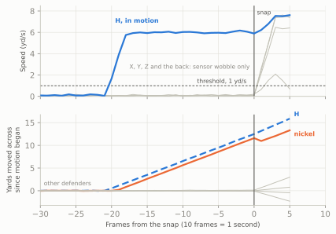
That bottom panel is the seed of the first project in this chapter’s last section: a man/zone classifier is, at heart, a careful version of “did anyone follow?”. With the real files you can check your rule against the charters: the Big Data Bowl 2025 player_play.csv has inMotionAtBallSnap, motionSinceLineset and shiftSinceLineset for every player on every play.
pp = pd.read_csv("data/bdb/player_play.csv")
snap = trk[trk["frameType"] == "SNAP"].merge(players, on="nflId")
snap = snap[snap["position"].isin(["WR", "TE", "RB", "FB"])]
mine = snap.assign(my_motion=snap["s"] > 1.0)[["gameId", "playId", "nflId", "my_motion"]]
keys = ["gameId", "playId", "nflId"]
check = mine.merge(pp[keys + ["inMotionAtBallSnap"]], on=keys)
print(pd.crosstab(check["my_motion"], check["inMotionAtBallSnap"].fillna(False)))
# then tune the threshold (try 0.6 to 2.0 yd/s) and look at the plays where you disagreeFeature 4: safety rotation, step by step
This is the figure Disguise, Rotation, and Split-Field Coverage showed as a finished picture. Its job is to show when a defense’s real coverage appears. Here it is built in four steps.
Step 1: find the safeties, and follow them on one play
The first decision is the least obvious: who counts as a safety? Not whoever the roster calls one. Teams play three-safety nickel packages, corners rotate to the deep middle on some calls, and a safety walked down into the box before the snap is not playing safety on that play. A robust definition uses the data itself: the two deepest defenders one second before the snap. Then measure, for each frame, how deep each one is (yards past the line of scrimmage) and how far he is sideways from the middle of the field.
def safety_tracks(frames, los, ball_y, lo=-30, hi=20):
"""The two deepest defenders 1 s before the snap: depth and distance from the ball, by frame."""
f = frames.copy()
f["frame_rel"] = np.round(f["time"] * FPS).astype(int)
pre = f[(f["side"] == "def") & (f["frame_rel"] == -10)]
ids = pre.nlargest(2, "x")["displayName"]
s = f[f["displayName"].isin(ids) & f["frame_rel"].between(lo, hi)].copy()
s["depth"] = s["x"] - los
s["from_middle"] = (s["y"] - ball_y).abs()
return s
saf1 = safety_tracks(one, LOS, BALL_Y)
print("safeties found:", sorted(saf1["displayName"].unique()))safeties found: ['FS', 'SS']Show the plotting code
def plot_safety_pair(s, names=None, height=4.0, phase_labels=True):
"""Depth (top) and distance from the middle (bottom) of the two deepest defenders, by frame."""
fig, axes = plt.subplots(2, 1, figsize=(6.5, height), sharex=True)
for ax, col, ylab in ((axes[0], "depth", "Depth (yd)"), (axes[1], "from_middle", "From the middle (yd)")):
ax.axvspan(-30, 0, color=style.GRID, alpha=0.35, lw=0)
ends = s[s["frame_rel"] == s["frame_rel"].max()].set_index("displayName")[col]
for k, (key, g) in enumerate(s.groupby("displayName")):
ax.plot(g["frame_rel"], g[col], color=style.SERIES[k + 1], lw=2.2)
close = abs(ends.iloc[0] - ends.iloc[1]) < 1.2 # keep the two end labels apart
nudge = (0.6 if ends[key] == ends.max() else -0.6) if close else 0.0
ax.text(20.6, g[col].iloc[-1] + nudge, (names or {}).get(key, key),
color=style.SERIES[k + 1], fontsize=8, fontweight="bold", va="center")
ax.axvline(0, color=style.INK_2, lw=1)
ax.set_ylabel(ylab, fontsize=8.5)
ax.set_xlim(-30, 25)
if phase_labels:
top = axes[0].get_ylim()[1] - 0.3
axes[0].text(-29, top, "before the snap", fontsize=8, color=style.INK_2, va="top")
axes[0].text(0.6, top, "after the snap", fontsize=8, color=style.INK_2, va="top")
axes[1].set_xlabel("Frames from the snap (10 frames = 1 second)", fontsize=8.5)
fig.tight_layout()
plt.show()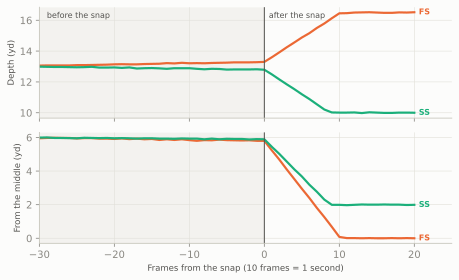
Step 2: many plays, one chart
One play is an anecdote. The chart in 06-06 stacks sixty: thirty on which a two-high shell stayed two-high, and thirty on which it rotated to one-high. The generator (folded below, and the same one that chapter used, with the same random seed so the figures match) varies where the safeties start, which side the rotation goes to, how fast they move and, crucially, when they start moving (tau, in seconds; negative means before the snap). Rotated plays send one safety to the deep middle and bring the other down to robber depth; robber depth itself varies with the call and the down and distance, anywhere from about 8 to 12 yards.
Show the simulator (two-high shells that stay, rotate, or spin)
def nickel_vs_2x2(shell="two_high", safety_w=7.5):
"""11 personnel 2x2 against a nickel (4-2-5); two-high safeties 13 deep, outside the hashes."""
off = offense("gun_2x2")
dfn = defense("nickel", shell, off)
out = []
for q in dfn:
if q.key == "WILL":
q = q.moved(d=5.0, w=-6.0)
elif q.pos == "CB":
q = q.moved(d=7.0, w=q.w + (0.8 if q.w > 0 else -0.8), label="C")
elif q.key in ("FS", "SS") and shell == "two_high":
q = q.moved(d=13.0, w=safety_w if q.w > 0 else -safety_w)
out.append(q)
return off, out
def _seg(p, key, start, end, tau, speed):
"""Move `key` from start to end at `speed`, starting at time tau (negative = before the snap)."""
start, end = np.array(start, float), np.array(end, float)
L = float(np.linalg.norm(end - start))
if tau < 0: # part of the trip happens before the snap
pre = min(L, speed * -tau)
mid = start + (end - start) * (pre / L if L else 0)
p.motion(key, to=tuple(mid), speed=max(pre / -tau, 0.05))
if L - pre > 0.05:
p.drop(key, tuple(end), speed=speed)
else:
p.drop(key, tuple(end), speed=speed, delay=tau)
def sim_dropback(kind, rng, tau=None, play_id=0):
"""One simulated dropback as BDB-style tracking rows (10 frames a second).
kind: 'stay2' (two-high shown and played), 'rot1' (two-high shown, rotated to one-high),
'stay1' (one-high shown and played), 'spin2' (one-high shown, bailed to two-high).
"""
off, dfn = nickel_vs_2x2()
side = rng.choice([-1, 1])
if kind in ("stay2", "rot1"):
d1, d2 = rng.uniform(11.5, 14.0, 2)
w1, w2 = rng.uniform(5.5, 8.5, 2)
fs0, ss0 = (d1, -side * w1), (d2, side * w2)
else:
fs0 = (rng.uniform(13.0, 15.5), rng.uniform(-1.5, 1.5))
ss0 = (rng.uniform(7.0, 10.0), side * rng.uniform(4.0, 7.0))
dfn = [q.moved(d=fs0[0], w=fs0[1]) if q.key == "FS" else q for q in dfn]
dfn = [q.moved(d=ss0[0], w=ss0[1]) if q.key == "SS" else q for q in dfn]
p = Play(off, dfn, los=35, to_go=10)
p.motion("MIKE", to=(4.5, 1.5), speed=0.1) # a slow shuffle so frames start 3 s early
p.route("X", r.go(22)); p.route("Z", r.go(22)); p.route("H", r.seam(20)); p.route("Y", r.seam(20))
p.dropback(2.5)
tau = rng.uniform(-0.9, 0.3) if tau is None else tau
v = rng.uniform(5.0, 6.5)
t0 = max(tau, 0)
if kind == "stay2":
_seg(p, "FS", fs0, (fs0[0] + rng.uniform(2, 4), fs0[1] - side * rng.uniform(0.5, 2.5)),
t0, v * .6)
_seg(p, "SS", ss0, (ss0[0] + rng.uniform(2, 4), ss0[1] + side * rng.uniform(0.5, 2.5)),
t0, v * .6)
elif kind == "rot1":
_seg(p, "FS", fs0, (rng.uniform(15.5, 18.0), rng.uniform(-1.0, 1.0)), tau, v)
_seg(p, "SS", ss0, (rng.uniform(8.0, 10.5), side * rng.uniform(3.0, 6.0)), tau, v * 0.8)
elif kind == "stay1":
_seg(p, "FS", fs0, (fs0[0] + rng.uniform(2, 4), fs0[1]), t0, v * 0.6)
_seg(p, "SS", ss0, (ss0[0] + rng.uniform(-1, 1), ss0[1] + side * rng.uniform(1, 4)),
t0, v * 0.6)
else:
_seg(p, "FS", fs0, (rng.uniform(15.5, 18.0), -side * rng.uniform(9.0, 12.0)), tau, v)
_seg(p, "SS", ss0, (rng.uniform(15.5, 18.0), side * rng.uniform(9.0, 12.0)), tau, v)
trk_ = p.to_tracking(fps=FPS, play_id=play_id)
trk_["kind"], trk_["los"], trk_["ball_y"] = kind, p.los, p.ball_y
return trk_The loop applies safety_tracks() from step 1 to each play, then labels each safety’s role: on rotated plays, the one who finishes deepest “spun” to the middle and the other “came down”; on the others both “stayed”.
rng = np.random.default_rng(2026)
taus = [0.0] * 30 + list(rng.uniform(0.0, 0.25, 22)) + list(rng.uniform(-1.0, -0.5, 8))
tracks = []
for i, kind in enumerate(["stay2"] * 30 + ["rot1"] * 30):
t = sim_dropback(kind, rng, tau=taus[i], play_id=i + 1)
s = safety_tracks(t, los=35, ball_y=t["ball_y"].iloc[0])
tracks.append(s.assign(kind=kind))
saf = pd.concat(tracks, ignore_index=True)
end = saf[saf["frame_rel"] == 20].set_index(["playId", "displayName"])["depth"]
deepest = end.groupby(level=0).idxmax().map(lambda t: t[1])
saf["role"] = np.where(saf["kind"] == "stay2", "stayed",
np.where(saf["displayName"] == saf["playId"].map(deepest), "spun", "dropped"))Show the plotting code
def plot_safety_rotation(saf):
COL = {"stayed": style.SERIES[0], "spun": style.SERIES[1], "dropped": style.SERIES[2]}
LAB = {"stayed": "stayed two-high", "spun": "ran to the middle", "dropped": "came down"}
fig, axes = plt.subplots(2, 1, figsize=(6.5, 5.6), sharex=True)
for ax, col, ylab in ((axes[0], "depth", "Depth past the line of scrimmage (yd)"),
(axes[1], "from_middle", "Sideways from the middle (yd)")):
ax.axvspan(-30, 0, color=style.GRID, alpha=0.35, lw=0)
for _, g in saf.groupby(["playId", "displayName"]):
ax.plot(g["frame_rel"], g[col], color=COL[g["role"].iloc[0]], lw=0.6, alpha=0.35)
for role, g in saf.groupby("role"):
med = g.groupby("frame_rel")[col].median()
ax.plot(med.index, med.values, color=COL[role], lw=2.4)
v = med.iloc[-1] + ({"spun": 0.7, "stayed": -0.7}.get(role, 0.0) if col == "depth" else 0.0)
ax.text(20.6, v, LAB[role], color=COL[role], fontsize=8, va="center", fontweight="bold")
ax.axvline(0, color=style.INK_2, lw=1.0)
ax.set_ylabel(ylab, fontsize=8.5)
ax.set_xlim(-30, 30)
top = axes[0].get_ylim()[1] - 0.3
axes[0].text(-29, top, "before the snap", fontsize=8, color=style.INK_2, va="top")
axes[0].text(0.6, top, "after the snap", fontsize=8, color=style.INK_2, va="top")
axes[1].set_xlabel("Frames from the snap (10 frames = 1 second)", fontsize=8.5)
axes[0].set_title("The two safeties around the snap (simulated, BDB-format tracking)", fontsize=10)
fig.tight_layout()
plt.show()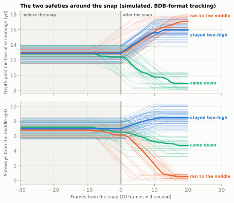
Read it as the shape to look for, not as evidence: a simulation gives back only the timings it was given. A rotation is a divergence. Before it starts, rotated and honest plays are indistinguishable; within about ten frames they are in completely different places. Everything a defensive coordinator means by “rotate late” is about where that divergence begins.
Step 3: when did it rotate?
The chart shows timing by eye. To compare defenses you need it as a number for every play: the rotation onset, the frame at which the safety who finishes in the middle starts moving there. The rule below first decides whether the play rotated at all (one safety ends within 2.5 yards of the middle and the other ends shallower than 12 yards, deep enough to count a robber at the 10 to 12 yards the disguise chapter describes), then finds the first frame at which the middle safety is a yard closer to the middle than he was during the cadence.
def rotation_onset(s):
"""Frames from the snap at which the safety who ends in the middle starts moving there.
None if the play never rotated to one-high (s: one play's output of safety_tracks)."""
last = s[s["frame_rel"] == s["frame_rel"].max()].set_index("displayName")
post = last["from_middle"].idxmin()
other = last.drop(index=post)
if last.loc[post, "from_middle"] > 2.5 or other["depth"].iloc[0] > 12.0:
return None
g = s[s["displayName"] == post]
base = g.loc[g["frame_rel"].between(-30, -20), "from_middle"].median()
return int(g.loc[g["from_middle"] < base - 1.0, "frame_rel"].min())
per_play = (saf.groupby("playId").apply(rotation_onset, include_groups=False)
.rename("onset").reset_index())
per_play["onset"] = pd.to_numeric(per_play["onset"]) # None (no rotation) becomes NaN
onsets = per_play.dropna().astype({"onset": int})
n_late, n_early = (onsets["onset"] >= 0).sum(), (onsets["onset"] < 0).sum()
print(f"{len(onsets)} of 60 plays flagged as rotations; "
f"{n_late} started at or after the snap, {n_early} before it")30 of 60 plays flagged as rotations; 22 started at or after the snap, 8 before itShow the plotting code
def plot_onsets(onsets):
fig, ax = plt.subplots(figsize=(6.5, 1.9))
jit = np.random.default_rng(1).uniform(-0.3, 0.3, len(onsets))
ax.axvspan(-5, 0, color=style.GRID, alpha=0.6, lw=0)
late = (onsets["onset"] >= 0).to_numpy()
ax.scatter(onsets["onset"] + jit * 0.4, jit, s=30, edgecolor=style.SURFACE, lw=0.6, zorder=3,
color=np.where(late, style.SERIES[1], style.SERIES[0]))
ax.axvline(0, color=style.INK_2, lw=1)
ax.text(1.0, 0.75, f"late: {late.sum()} plays", color=style.SERIES[1], fontsize=8, fontweight="bold")
ax.text(-15.5, 0.75, f"early: {(~late).sum()} plays", color=style.SERIES[0], fontsize=8,
fontweight="bold")
ax.text(-2.5, -0.85, "last 0.5 s", color=style.INK_2, fontsize=7.5, ha="center")
ax.set_ylim(-1.1, 1.1)
ax.set_yticks([])
ax.set_xlim(-16, 8)
ax.set_xlabel("Rotation onset, frames from the snap", fontsize=8.5)
ax.grid(axis="y", visible=False)
plt.show()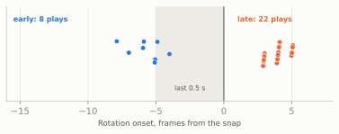
With rotation onset as a column, the measurement 06-06 sketched really is a few lines of pandas. On real files the defense column would be defensiveTeam from plays.csv, and per_play would hold every dropback on which the defense showed two-high; here all sixty simulated plays belong to one made-up defense:
profile = (per_play.assign(defense="SIM") # real files: defensiveTeam
.groupby("defense")
.agg(two_high_looks=("playId", "size"),
rotate_share=("onset", lambda s: s.notna().mean()), # how often it lies
median_onset=("onset", "median"))) # how late
md_table(profile.reset_index())| defense | two_high_looks | rotate_share | median_onset |
|---|---|---|---|
| SIM | 60 | 0.5 | 4 |
The first number is how often the shell lies; the second is how late it changes. A defense that scores high on both (it rotates often, and its median onset sits at or after the snap) is the hardest to read before the snap, which is the point of late rotation.
Step 4: the same thing on real files
# BDB 2025: 2022 season, Weeks 1-9, every frame from the huddle break to the end of the play.
plays = pd.read_csv("data/bdb/plays.csv")
dropbacks = plays[plays["pff_passCoverage"].notna()]
frames, onset_rows = [], []
for week in range(1, 10): # one week at a time keeps memory sane
trk = bdb.load_tracking(f"data/bdb/tracking_week_{week}.csv")
trk = trk.merge(dropbacks[["gameId", "playId"]], on=["gameId", "playId"])
for (g, pl), _ in trk.groupby(["gameId", "playId"]):
one = bdb.prepare(trk, plays, game_id=g, play_id=pl) # standardised, time 0 = snap
snap = one[(one["frameType"] == "SNAP") & (one["side"] == "ball")]
if snap.empty or one["time"].min() > -3.0: # need three seconds of pre-snap frames
continue
s = safety_tracks(one, float(snap["x"].iloc[0]), float(snap["y"].iloc[0]))
frames.append(s.assign(gameId=g, playId=pl))
onset_rows.append((g, pl, rotation_onset(s)))
saf = pd.concat(frames).merge(plays[["gameId", "playId", "defensiveTeam", "pff_passCoverage"]],
on=["gameId", "playId"])
per_play = pd.DataFrame(onset_rows, columns=["gameId", "playId", "onset"])
# Plot `saf` exactly as in step 2 (role from the coverage label and the deepest safety at +20);
# keep the plays that showed two-high at -1 s (shell_at, next section) and run the profile above
# grouped by defensiveTeam.Expect the real version to be messier, in useful ways. Real safeties bounce, take false steps and react to motion, so the thin lines will be noisy. Plays start at different distances from the snap, so some will have fewer than thirty pre-snap frames. And the role labels will need the charted coverage, because a real defense can rotate and stay two-high: a quarters look that rolls into Cover 6 after the snap changes who has which deep zone without changing the shell. An “invert” Cover 2 is a sharper trap: the safeties come down to the flats while the corners bail to the deep halves, so after the snap the two deepest defenders are corners, and a feature that keeps following the two players who were deepest before the snap watches the wrong men. (The rotations Cover 3 Family taught, the buzz and the cloud, both end one-high, so this rule catches them.)
The shell at the snap, by depth and width
The chart above follows the shell through time. Often you want one label per play instead: what shell did the defense show at the snap? A tempting shortcut is a single depth: “if the second-deepest defender is deeper than about 11 yards, call it two-high.” It fails, because two-high safeties are not always deep. They usually sit 10 to 14 yards off the ball, and quarters safeties often align at 8 to 10 so they can fit the run; a one-high defense’s second-deepest man, a safety rolled down into the box or a robber, sits at 7 to 10. The depths overlap.
What separates the shells is width. In a two-high shell, the two deepest defenders sit on opposite sides of the ball, each on or outside the hash. In a one-high shell, the deepest defender sits in the middle. So the rule uses both:
def shell_at(defs, los, ball_y):
"""'two-high', 'one-high' or 'unclear' from one frame of defenders (columns x, y)."""
d, w = defs["x"].to_numpy() - los, ball_y - defs["y"].to_numpy() # w: + = offense's right
i1, i2 = np.argsort(d)[::-1][:2] # the two deepest
if d[i2] >= 8 and w[i1] * w[i2] < 0 and min(abs(w[i1]), abs(w[i2])) >= 3:
return "two-high" # both 8+ deep, opposite sides of the ball, on or outside the hashes
if abs(w[i1]) <= 3:
return "one-high" # the deepest man is in the middle
return "unclear"To see why width matters, here are 300 simulated snaps, half of each shell, drawn with realistic alignments (two-high safeties 8.5 to 14 yards deep, one-high down safeties 7 to 10.5):
rng = np.random.default_rng(22)
snaps = []
for i in range(300):
two = i % 2 == 0
if two: # two-high: one safety each side, quarters can be shallow
sides = rng.choice([-1, 1]) * np.array([1, -1])
d_s, w_s = rng.uniform(8.5, 14.0, 2), sides * rng.uniform(3.5, 8.5, 2)
else: # one-high: a post safety and a rolled-down safety
d_s = np.array([rng.uniform(12.0, 16.0), rng.uniform(7.0, 10.5)])
w_s = np.array([rng.uniform(-2.5, 2.5), rng.choice([-1, 1]) * rng.uniform(3.0, 7.0)])
d_cb = rng.uniform(5.0, 8.0, 2) # corners, 5 to 8 off, wide
defs = pd.DataFrame({"x": 35 + np.r_[d_s, d_cb],
"y": FIELD_WIDTH / 2 - np.r_[w_s, [-15.0, 15.0]]})
depths = np.sort(defs["x"].to_numpy() - 35)
deepest = defs.loc[defs["x"].idxmax()]
snaps.append({"truth": "two-high" if two else "one-high", "second_deepest": depths[-2],
"deepest_from_middle": abs(deepest["y"] - FIELD_WIDTH / 2),
"rule": shell_at(defs, 35, FIELD_WIDTH / 2)})
snaps = pd.DataFrame(snaps)
depth_only = np.where(snaps["second_deepest"] > 11, "two-high", "one-high")
print(f"depth cut at 11 yards: {(depth_only == snaps['truth']).mean():.0%} right; "
f"depth and width: {(snaps['rule'] == snaps['truth']).mean():.0%} right")depth cut at 11 yards: 64% right; depth and width: 100% rightShow the plotting code
def plot_shell(snaps):
fig, ax = plt.subplots(figsize=(6.5, 3.3))
for k, lab in enumerate(["two-high", "one-high"]):
g = snaps[snaps["truth"] == lab]
ax.scatter(g["second_deepest"], g["deepest_from_middle"], s=14, color=style.SERIES[k],
alpha=0.75, lw=0, label=f"{lab} (simulated)")
ax.axvline(11, color=style.INK_2, lw=0.9, ls=(0, (3, 2)))
ax.text(11.15, 9.75, "depth-only cut, 11 yd", fontsize=7.5, color=style.INK_2, va="top")
ax.axhline(3, color=style.INK, lw=1.0)
ax.text(11.3, 2.75, "width: deepest man\n3 yd off the middle", fontsize=7.5, color=style.INK,
va="top")
ax.set_xlabel("Depth of the second-deepest defender (yd)")
ax.set_ylabel("Deepest defender,\nyards from the middle", fontsize=8.5)
ax.set_xlim(6.3, 14.6)
ax.set_ylim(-0.3, 10.0)
ax.legend(loc="lower right", fontsize=8, frameon=True, facecolor=style.SURFACE, framealpha=1)
plt.show()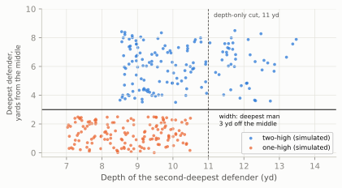
On these snaps the width rule is right every time, but only because the simulation was drawn from the same picture of football the rule encodes; the real files are the test. The rule is a first draft, and they will tell you where it needs work. Two refinements worth adding early: count only defenders inside the widest receivers, so that a corner bailing deep before the snap isn’t mistaken for a safety, and classify the shell at several moments (two seconds before the snap, one second, the snap itself), because the change between them is the disguise.
Shells by team
The shell rule needs frames, which for a recent season you don’t have. What nflverse does have is the coverage played on each dropback, charted after the snap. The chart below uses it for every defense in Weeks 1 to 9 of 2022, the slice of the 2022 season covered by the 2025 Big Data Bowl files: each team’s share of two-high coverages (Cover 2, 2-Man, Cover 4 and Cover 6) among its charted dropbacks.11
Show the plotting code
def plot_team_shares(share, league):
fig, ax = plt.subplots(figsize=(6.5, 5.6))
ypos = np.arange(len(share))
ax.hlines(ypos, 0, share.values, color=style.GRID, lw=1.2, zorder=1)
ax.scatter(share.values, ypos, s=26, color=style.SERIES[0], zorder=3)
ax.axvline(league, color=style.INK_2, lw=0.9, ls=(0, (3, 2)))
ax.text(league + 0.005, len(share) - 0.2, f"league {league:.0%}", fontsize=7.5, color=style.INK_2,
va="bottom")
for y_, v in zip(ypos, share.values):
ax.text(v + 0.008, y_, f"{v:.0%}", fontsize=6.8, color=style.INK_2, va="center")
ax.set_yticks(ypos, share.index, fontsize=7.5)
ax.set_ylim(-0.8, len(share) + 0.6)
ax.set_xlim(0, max(0.7, share.max() + 0.07))
ax.xaxis.set_major_formatter(plt.FuncFormatter(lambda v, _: f"{v:.0%}"))
ax.set_xlabel("Share of charted dropbacks played in a two-high coverage, 2022 Weeks 1-9", fontsize=8.5)
ax.grid(axis="y", visible=False)
plt.show()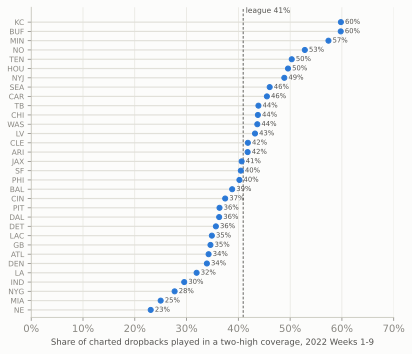
Read that chart with the chapter’s main lesson in mind: it is built from the coverage played, so it is a stand-in for the shell shown, and the two differ by exactly the disguise. Run shell_at() on the 2025 Big Data Bowl frames one second before each snap, put the share of two-high looks next to these dots, and the teams whose two numbers differ most are the ones that rotate. That comparison is Project 3. (The 2022 Seahawks in the chart predate Mike Macdonald, who coached Seattle from 2024.)
NoteFilm room: Seattle Seahawks 2025
The season: Mike Macdonald’s Seahawks won Super Bowl LX in a season in which Next Gen Stats, whose coverage labels come from a model run on tracking data,12 found the league in split-safety (two-high) coverage on 42.0% of dropbacks, the highest rate since its tracking of coverage began in 2018, with quarters (Cover 4) alone at 17.2%. Seattle went further. From Week 14 through the Super Bowl, the Seahawks played two-high on 54.8% of pass plays, the highest rate of any playoff team in that span, up from 46% in the nine games their safety Julian Love missed.13
What to notice: those numbers come from tracking; the coverage labels in nflverse for 2025 come from FTN’s human charters. The two broadly agree for the league (FTN’s labels give about 43% two-high for 2025), but they are different measurements of the same thing, and a team’s number can differ between them. When a broadcast quotes a coverage rate, ask whose. Then watch Seattle’s two safeties in the last second before the snap: how often does the shell you saw during the cadence survive the first second after it? The two-high to one-high case study shows what Macdonald asks them to do, and this chapter’s shell rule and onset measure are how you would time it.
Three projects to try
The features above are building blocks. Here are three projects that put them together, each with the real labels you would train or test against, a sketch on simulated plays, and the trap that catches most first attempts.
Project 1: man or zone?
The question: from tracking alone, was the coverage man or zone? The labels: pff_manZone in the Big Data Bowl 2025 plays.csv; team_coverage_man_zone in the 2026 supplementary_data.csv. The idea: in man coverage a defender’s job is a person, so he stays close to one receiver wherever that receiver goes. In zone his job is a place, so receivers run through his area and away from him. One feature captures much of that: for each defender, find the receiver nearest him at the snap, then measure how far apart they are a second or two later. Call it stickiness; small means man.
Show the simulator (Cover 1 and Cover 3 against random routes)
ROUTE_MENU = {"go": r.go(20), "post": r.post(10), "corner": r.corner(10), "out": r.out(10, 6),
"dig": r.dig(12, 10), "curl": r.curl(11), "comeback": r.comeback(14),
"slant": r.slant(1.5, 8), "hitch": r.hitch(5), "seam": r.seam(20)}
def jitter(route, rng, sd=1.0):
"""Real receivers don't run textbook depths: wobble each waypoint by about a yard."""
return [(0, 0)] + [(dn + rng.normal(0, sd), o + rng.normal(0, sd)) for dn, o in route[1:]]
def sim_coverage(kind, rng, play_id):
"""One dropback against Cover 1 ('man') or Cover 3 ('zone'); returns (tracking, routes run)."""
off, dfn = nickel_vs_2x2(shell="single_high")
if kind == "man": # the nickel over H, the Will over Y
where = {"NB": (5.5, -8.3), "WILL": (5.0, 6.0)}
dfn = [q.moved(d=where[q.key][0], w=where[q.key][1]) if q.key in where else q for q in dfn]
p = Play(off, dfn, los=35, to_go=10)
ran = {}
for key in ["X", "H", "Y", "Z"]:
name = rng.choice(list(ROUTE_MENU))
p.route(key, jitter(ROUTE_MENU[name], rng))
ran[key] = name
p.dropback(2.5)
if kind == "man": # Cover 1 with a rat and a robber; RB blocks
for d_, o_ in (("LCB", "X"), ("RCB", "Z"), ("NB", "H"), ("WILL", "Y")):
p.man(d_, o_)
p.drop("FS", (16, 0)); p.drop("MIKE", (8, 0)); p.drop("SS", (10, 3))
else: # Cover 3: three deep, four underneath
j = lambda: rng.normal(0, 1.0) # noqa: E731 zone landmarks vary a little
carry = {"LCB": "X", "RCB": "Z", "NB": "Y"} # deep-third corners (and the seam player)
vertical = {"go", "seam", "post", "corner"} # carry a vertical route through their area
for key, spot in {"LCB": (16, -13), "RCB": (16, 13), "FS": (17, 0), "NB": (8, 12),
"SS": (9, 4), "WILL": (7, -11), "MIKE": (9, -3)}.items():
if key in carry and ran[carry[key]] in vertical:
p.man(key, carry[key])
else:
p.drop(key, (spot[0] + j(), spot[1] + j()))
return p.to_tracking(fps=FPS, play_id=play_id), randef stickiness(t, defenders=("LCB", "RCB", "NB", "WILL")):
"""Median distance (1.0-2.5 s after the snap) from each defender to the receiver nearest him
at the snap, averaged over defenders. Small = defenders stayed with 'their' receivers."""
snap = t[np.isclose(t["time"], 0.0)].set_index("displayName")
later = t[t["time"].between(1.0, 2.5)]
vals = []
for d_ in defenders:
gap = np.hypot(snap.loc[RECEIVERS, "x"] - snap.loc[d_, "x"],
snap.loc[RECEIVERS, "y"] - snap.loc[d_, "y"])
mate = gap.idxmin()
a_ = later[later["displayName"] == d_].set_index("time")
b_ = later[later["displayName"] == mate].set_index("time")
vals.append(np.hypot(a_["x"] - b_["x"], a_["y"] - b_["y"]).median())
return float(np.mean(vals))
rng = np.random.default_rng(55)
sims, route_rows = [], []
for pid in range(240):
kind = "man" if pid % 2 == 0 else "zone"
t, ran = sim_coverage(kind, rng, pid)
sims.append((pid, kind, stickiness(t)))
ball_y = float(t.loc[(t["displayName"] == "football") & np.isclose(t["time"], 0.0), "y"].iloc[0])
for key, name in ran.items():
g = t[t["displayName"] == key][["time", "x", "y"]]
route_rows.append(g.assign(playId=pid, receiver=key, route=name, ball_y=ball_y))
mz = pd.DataFrame(sims, columns=["playId", "label", "stickiness"])
cuts = np.linspace(1, 10, 181)
acc = [((mz["stickiness"] < c) == (mz["label"] == "man")).mean() for c in cuts]
best_cut, best_acc = cuts[int(np.argmax(acc))], max(acc)
print(f"best threshold {best_cut:.1f} yd -> {best_acc:.0%} of simulated plays classified correctly")best threshold 2.0 yd -> 98% of simulated plays classified correctlyShow the plotting code
def plot_manzone(mz):
fig, ax = plt.subplots(figsize=(6.5, 2.8))
bins = np.arange(0, 14.5, 0.5)
for k, lab in enumerate(["man", "zone"]):
ax.hist(mz.loc[mz["label"] == lab, "stickiness"], bins=bins, color=style.SERIES[k], alpha=0.75,
label={"man": "Cover 1 (man)", "zone": "Cover 3 (zone)"}[lab])
ax.axvline(best_cut, color=style.INK_2, lw=1, ls=(0, (3, 2)))
ax.text(best_cut + 0.2, ax.get_ylim()[1] * 0.9,
f"threshold {best_cut:.1f} yd:\n{best_acc:.0%} correct", fontsize=7.5, color=style.INK_2,
va="top")
ax.set_xlabel("Stickiness: yards from defender to his receiver-at-the-snap")
ax.set_ylabel("Plays")
ax.legend(loc="upper right", fontsize=8)
plt.show()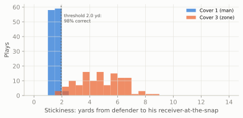
The trap: on simulated plays, where a man defender follows his receiver perfectly, one number sorts 98% of plays correctly. Real football is much harder. Man corners play with leverage (lining up on one side of the receiver to take that side away) and give ground on purpose, as the chapter play’s corners did; zone defenders in pattern-matching coverages become man defenders once routes declare; and some plays are man on one side and zone on the other. Expect a real-data version to need more features (orientation toward the receiver or toward the quarterback, how defenders react to motion, the safeties’ movement) and a proper model. Above all, split your training and test data by game, not by play: plays from the same game share a defense, a game plan and a pair of quarterbacks, so a model tested on plays from games it trained on will look far better than it is.
Project 2: what route did he run?
The question: from a receiver’s path alone, name his route. The labels: routeRan in the Big Data Bowl 2025 player_play.csv; in nflverse participation data, the targeted receiver’s route (charted). The idea: standardise each path so that “toward his own sideline” is always positive, then describe it with a few numbers (how deep he got, where he ended up across the field, whether he came back toward the quarterback) and turn the route tree into rules. “His own sideline” is decided by which side of the ball he lined up on at the snap, not which half of the field he is in: on a play from the hash, a slot receiver can line up on the short side of the ball yet in the wide half of the field, and a rule based on the middle of the field would turn his out into an in.
def route_features(g):
"""Max depth, final depth and final sideways move (+ = toward his own sideline) of one path."""
g = g.sort_values("time")
d = g["x"].to_numpy() - g["x"].iloc[0]
w = g["y"].to_numpy() - g["y"].iloc[0]
out_sign = 1 if g["y"].iloc[0] < g["ball_y"].iloc[0] else -1 # right of the ball: out = -y
out = -w * out_sign
return pd.Series({"depth_max": d.max(), "depth_end": d[-1], "out_end": out[-1]})
def classify(f):
"""The route tree as if-then rules."""
came_back = f["depth_max"] - f["depth_end"]
if came_back > 0.6 and abs(f["out_end"]) < 4.5: # turned back toward the quarterback
return "comeback" if f["out_end"] > 1.0 else "curl/hitch"
if f["depth_max"] >= 16:
return "corner" if f["out_end"] > 4 else ("post" if f["out_end"] < -4 else "vertical")
if f["out_end"] > 3:
return "out"
if f["out_end"] < -3:
return "slant" if f["depth_max"] < 8 else "dig"
return "other"
TRUE_CLASS = {"go": "vertical", "seam": "vertical", "post": "post", "corner": "corner", "out": "out",
"dig": "dig", "slant": "slant", "curl": "curl/hitch", "hitch": "curl/hitch",
"comeback": "comeback"}
paths = pd.concat(route_rows)
paths = paths[paths["time"] >= 0]
feats = paths.groupby(["playId", "receiver"]).apply(route_features, include_groups=False)
feats["predicted"] = feats.apply(classify, axis=1)
ran_route = paths.drop_duplicates(["playId", "receiver"]).set_index(["playId", "receiver"])["route"]
feats["truth"] = ran_route.map(TRUE_CLASS)
route_acc = (feats["predicted"] == feats["truth"]).mean()
n_other = (feats["predicted"] == "other").sum()
print(f"{len(feats)} simulated routes; rules agree with the true route on {route_acc:.0%}")960 simulated routes; rules agree with the true route on 88%Show the plotting code
def plot_routes(feats, paths):
classes = ["vertical", "post", "corner", "out", "dig", "slant", "curl/hitch", "comeback", "other"]
fig, axes = plt.subplots(2, 5, figsize=(6.5, 4.2), sharex=True, sharey=True)
axes.flat[-1].axis("off")
for ax, cls in zip(axes.flat, classes):
sub = feats[feats["predicted"] == cls]
for (pid, rec), f in sub.iterrows():
g = paths[(paths["playId"] == pid) & (paths["receiver"] == rec)].sort_values("time")
sgn = 1 if g["y"].iloc[0] < g["ball_y"].iloc[0] else -1
ax.plot(-(g["y"] - g["y"].iloc[0]) * sgn, g["x"] - g["x"].iloc[0],
color=style.SERIES[0] if f["truth"] == cls else style.SERIES[1],
lw=0.6, alpha=0.45 if f["truth"] == cls else 0.9)
ok = (sub["truth"] == cls).sum()
ax.set_title(f"{cls}\n{ok} of {len(sub)} right", fontsize=7.5)
ax.set_aspect("equal")
ax.tick_params(labelsize=7, labelbottom=True)
ax.axhline(0, color=style.BASELINE, lw=0.6)
for ax in axes[1][:4]:
ax.set_xlabel("to his\nsideline (yd)", fontsize=7)
for ax in axes[:, 0]:
ax.set_ylabel("downfield (yd)", fontsize=7.5)
fig.tight_layout()
plt.show()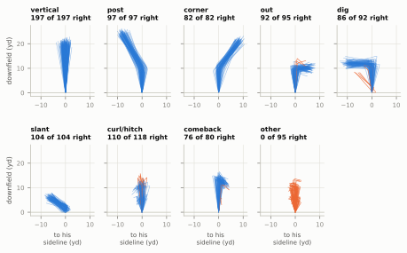
The rules get 88% of the simulated routes right, and the misses are instructive: they cluster at the borders between classes, where one yard of depth or one degree of angle decides the name. The largest group, the 95 routes the rules call “other”, are mostly curls and hitches whose wobbled path stopped without coming back the 0.6 yards the rule asks for. Lower the threshold and they become curls, but then some outs and digs that sag slightly at the end become curls too: every threshold trades one error for another. Real charters face the same borders and settle them with judgement (“he was supposed to run a curl”) that tracking cannot see.
The trap: treating the charted label as truth, and assuming it uses your names. Charting services have their own route vocabularies, and they change. nflverse’s 2022 participation data (charted by NGS) uses twelve names, HITCH, FLAT, OUT, CROSS, GO, SCREEN, IN, SLANT, POST, ANGLE, CORNER and WHEEL, while the 2025 data (charted by FTN) uses others, such as QUICK OUT and DEEP OUT, IN/DIG, HITCH/CURL, SHALLOW CROSS/DRAG and SWING.14 So a dig is an IN in one year and an IN/DIG in another, drags fall under a crossing label, and the flat, screen, angle, swing and wheel classes need rules of their own. Before you write a rule, run value_counts() on the label column of the release you have, map your classes onto it on paper, and check your model’s “errors” on film before you believe them.
Project 3: measuring disguise
The question: how often does a defense show one shell and play another, and how late does it change? The labels: pff_passCoverage in the Big Data Bowl 2025 plays.csv (the coverage played, charted after the snap). The idea: you have already built everything it needs. Label the shell two seconds before the snap and at the snap with shell_at(), compare both with the charted coverage, and add the rotation onset from step 3. Disguise, Rotation, and Split-Field Coverage shows what the result looks like on eight made-up defenses, and the code for the real files.
The trap: “two-high” is not one thing. A defense can show two-high and play Cover 6 or quarters honestly while its safeties creep and bounce; it can rotate within two-high; and charting labels themselves changed between seasons (nflverse participation data switches from NGS to FTN coding in 2023, with different coverage names). Define your classes on paper before you write code, and keep the definition fixed across teams and seasons.
One more, if you want a fourth: expected yards after the catch. The Shanahan wide-zone case study compared nflverse’s expected YAC, which knows only where the ball was caught, with Next Gen Stats’ version, which knows where the defenders were. You can build the second kind yourself: take every completion’s catch frame, describe it with this chapter’s features (the receiver’s speed and direction, the distance and closing speed of the nearest two defenders, the separation at the catch), fit a model of the yards gained after the catch, and subtract. The trap is the same as in Project 1: split by game, and check that what your model calls “over expected” survives a second season.
Project 3 is, nearly word for word, the question the 2025 Big Data Bowl winners answered. Which brings us to the competition itself.
The Big Data Bowl
The Big Data Bowl is the NFL’s annual public analytics competition. Each year the league releases a slice of tracking data with a theme, and anyone (students, professionals, hobbyists) can enter. The finalists present at the NFL Scouting Combine, and the best ideas tend to show up a year or two later as Next Gen Stats metrics or broadcast graphics. It started in 2019; its co-creator is Michael Lopez, a former statistics professor who now leads the league’s football data and analytics group, and it was designed around a problem the league had: it was sitting on a uniquely rich data set that almost nobody outside the league and its clubs could study. Releasing slices to the public was a recruiting tool as much as a research one: the league says more than 75 Big Data Bowl participants have since been hired into data and analytics jobs in sports.15
Themes, 2019 to 2027
| Edition | Theme | Data released | Winning idea, and what it led to |
|---|---|---|---|
| 2019 | Open questions on speed, routes and coverage | 2017 season, first six weeks | Several entries modelled completion probability and “what if” throws to other receivers |
| 2020 | Rushing: predict the yards a run will gain from the handoff | 2017-2018 run plays; scored live on 2019 Weeks 13-17 | The winning model became NGS’s expected rushing yards, the basis of RYOE |
| 2021 | Defending the pass | 2018 season, every pass play | Winners classified man and zone coverage, then graded each defender’s effect on the play before and after the throw |
| 2022 | Special teams | 2018-2020 punts, kickoffs and kicks | Winners computed a punt returner’s best path at every frame and graded his decisions against it |
| 2023 | Linemen on pass plays | 2021 season, Weeks 1-8 | Winners (“Between the Lines: How Do We Measure Pressure?”) measured pocket pressure, and how long the pocket would last, at every frame |
| 2024 | Tackling | 2022 season, Weeks 1-9 | Winners (“Uncovering Missed Tackle Opportunities”) counted a missed tackle when a defender’s modelled tackle probability rose high and then fell with no tackle |
| 2025 | Pre-snap behaviour, and what it reveals | 2022 season, Weeks 1-9, first edition with full pre-snap frames | “Exposing Coverage Tells in the Pre-Snap” won; NGS built a pre-snap disguise model |
| 2026 | Player movement while the ball is in the air | 2023 season, Weeks 1-18; prediction track scored on late-2025 games | “Ghostbusters” (ghost defenders) won the analytics track |
| 2027 | Linking Combine sensor tracking to later regular-season performance | 2023-2025 Combine sensor tracking (10 Hz) plus game tracking for the same players | Launched October 2026; entries close January 2027 |
The 2021-2024 winners are from contemporary reports of each edition.16 A few editions deserve a closer look, because their winning ideas changed how the league measures the game.
2020: from a competition to a broadcast stat. The rushing edition was a pure prediction contest: given the tracking frame at the handoff, predict how many yards the run would gain. The winners, Philipp Singer and Dmitry Gordeev, two Austrian data scientists competing as “The Zoo”, built a neural network that looked at every pair of an offensive player and a defender (how far apart they were, how fast they were closing), rather than at the players one at a time.17 Next Gen Stats adopted the approach for its expected rushing yards, which is why “rush yards over expected” now appears on broadcasts.
2025: reading the defense before the snap. The first edition with complete pre-snap frames asked what pre-snap movement reveals. The winners, NYU students Smit Bajaj and Vishakh Sandwar, built “Exposing Coverage Tells in the Pre-Snap”, a model of which pre-snap movements give a coverage away; Next Gen Stats then built a disguise model of its own, crediting their work.18 That is Project 3 above, and the tells catalogue in Watching Live is its human version.
2026: the ball in the air. The 2026 edition ran two competitions. In the prediction track, entrants were given every player’s tracking up to the throw and had to predict where each relevant player would be while the ball was in flight; the leaderboard was scored live on games from Weeks 14 to 18 of the 2025 season. The analytics track was won by Lucca Ferraz of Rice University with “Ghostbusters: Back off man, I’m a Data Scientist!”, which built “ghost” defenders, a model of where an average defender would have gone, and graded real defenders against their ghosts.19 Notice the release’s quirk: the training files are the 2023 season, Weeks 1-18, even though some of the league’s announcement text mentions 2023 and 2024.
What the winners have in common
Read enough Big Data Bowl write-ups and a pattern shows up. The entries that win, and the ones the league later adopts, tend to share five habits.
- A football question first. “Which pre-snap movements give away the coverage?” beats “here is a clustering of safety paths.” Judges are league and club football staff; a metric they can’t connect to a decision is a curiosity.
- An expectation, then a comparison. Most winning metrics have the shape of RYOE: model what an average player would do in this exact situation, then measure the real player against it. Ghost defenders, a returner’s best path and a defender’s tackle probability are all the same idea.
- Relative features. Positions relative to the ball, the line, the nearest opponent, and speeds relative to each other, not raw x and y. The 2020 winners’ pairwise design is the clearest case.
- Honest validation. Does the metric predict something it was not built from? Is it stable from one half of the season to the other? Does it rank players in an order football people recognise, with surprises you can explain?
- Pictures. Nearly every finalist animates plays. An animation of the metric changing frame by frame is how a coach decides whether to trust it, which is why this book’s library draws real and simulated plays the same way.
NoteGo deeper
Earlier editions produced ideas you will meet again: a “hypothetical completion probability” for every receiver on a play, not only the one targeted, from the first edition (Sameer Deshpande and Katherine Evans);20 and from the 2023 linemen edition’s data, STRAIN, a pass-rush measure built from how fast a rusher closes on the quarterback, by Quang Nguyen, Ronald Yurko and Gregory Matthews of Carnegie Mellon.21 Both were later published as academic papers, which are the best way to see what a strong entry looks like once it has been checked carefully.
TipWatch for it
Your first tracking chart. You can’t download this week’s tracking data, but you can practise the whole workflow on a play you watch live, and check part of it against real numbers within days.
- Pick one play during the game, ideally a dropback with motion. Write down the quarter, the clock, the down and distance, and three facts: the shell before the snap (two deep defenders on either side of the ball, outside the hashes, is two-high; one deep defender in the middle is one-high), whether anyone was moving at the snap, and where the ball went.
- Watch one safety from the moment the offense sets until the throw. Did he move before the snap or at it? Say “now” out loud when he starts to rotate; you are estimating rotation onset by ear.
- After the game, find the play in nflverse play-by-play (
load_pbp()for the current season, matched on quarter and clock) to get the official description and the target. - Draw it in
gridironthe way you remember it: formation, motion, the routes you saw, the safety rotation. Export it withto_tracking()and run this chapter’sseparation(),shell_at()andsafety_tracks()on it. - Check what you can. Next Gen Stats’ weekly receiving numbers (
load_nextgen_stats(stat_type= "receiving"), weekly rows) include the targeted receiver’s average separation and cushion for that game. Was your play typical for him? - Keep the file. When that season’s tracking appears in a future Big Data Bowl, run the same code on the real frames and see how good your eyes were.
Predict the play
The pictures use the course’s position letters: on offense X, Z and H are wide receivers, Y the tight end, R the back and Q the quarterback; on defense E is an end, T a tackle, M and W the middle and weak-side linebackers, C a cornerback, $ the nickel back, and FS and SS the safeties.
TipPredict the play
Motion, and nobody follows. The offense is in the same 2x2 set as the chapter play and sends H across the formation from the left slot. The two frames below are 2 seconds before the snap and the snap itself, with the defenders’ trails drawn thick so you can see who moved, and how far. Before the snap: is the defense more likely in man or zone? What would this chapter’s motion and travel measures say? And with two safeties still at 13 yards at the snap, what do you still not know?
TipAnswer
Zone is the better bet. Nobody travelled with H: the Will linebacker who was over him slid two or three yards toward the middle and the Mike slid over, but no defender crossed the formation with him. In this chapter’s terms, every defender’s “yards moved across since motion began” stays small while H’s grows past 12, so the travel feature says no man defender followed. The two linebackers bumping over together is what zone defenses do to keep their areas balanced to the new strength.
What you still don’t know is the shell after the snap. Two safeties at 13 yards at the snap fit Cover 2, quarters or Cover 6, but they also fit a late rotation to Cover 3. Motion answered “man or zone?”; only the first frames after the snap answer “which zone?”. That is exactly why defenses that rotate late pair it with zone-looking motion responses: the motion tell and the shell tell can be made to point different ways.
TipPredict the play
Read the chart. Here are the two deepest defenders on one simulated play, A and B, measured exactly as in step 1 of the rotation section. Before the snap, what shell did the defense show? What did it play after the snap? Did the change start early enough for the quarterback to use it, and what would rotation_onset() return?
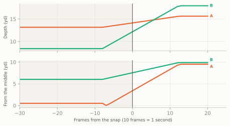
TipAnswer
One-high shown, two-high played. Two seconds before the snap one defender sits deep in the middle (about 13 yards deep, within a yard or so of the middle) and the other is down at about 8 yards, several yards off to one side: a one-high shell. Two seconds after the snap both are 16 to 18 yards deep and about 10 yards either side of the middle: two deep halves, so Cover 2 (or 2-Man, with man underneath). It is not quarters: quarters safeties stay shallower, around 10 to 13 yards, and inside the slot receivers, reading them, rather than bailing to 15-plus yards near the numbers. This is a “spin” the other way from the chapter play, one-high to two-high.
The movement starts about eight frames before the snap, so a quarterback watching the safeties could see the shell changing during his cadence: not a late rotation. And rotation_onset() returns None, because it was written to find rotations to one-high (one safety finishing in the middle). That is a useful reminder about home-made features: they answer exactly the question you coded, so a play that moves the other way slips through silently. Extending it to spins toward two-high is a good first edit.
TipPredict the play
Read the rows. One frame from the chapter play, 0.7 seconds after the snap, with three players marked A, B and C. Their rows from the standardised file are in the table under the picture. Which one is backpedalling, which is running a route, and which is standing still? For which of them should you ignore dir?
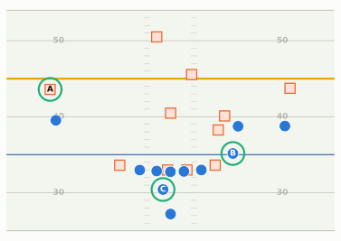
| player | x | y | s | o | dir |
|---|---|---|---|---|---|
| A | 53.6 | 42.4 | 2.2 | 272.5 | 93.2 |
| B | 45.2 | 18.5 | 7.5 | 149 | 153.9 |
| C | 40.4 | 27.6 | 0.1 | 83.8 | 138.3 |
TipAnswer
A is backpedalling. He faces the backfield (o near 270 degrees, toward x = 0) while moving downfield (dir near 90) at about 2.2 yards a second: the left corner, giving ground in off coverage with a cushion of about four yards on X, before he turns to run with him.
B is running a route. He faces and moves the same way, at about 7.5 yards a second, heading toward the offense’s right (dir well above 90 means he is drifting toward low y, which after standardising is the offense’s right): H, who was in motion at the snap and is now on his way to the flat.
C is standing still, or close to it: his speed is 0.1 yards a second, well under the 1-yard-a-second threshold. His o is meaningful (he faces downfield, set to block), but his dir is just the direction of the chips’ wobble and could be anything. That is the running back, who stepped up beside the left guard and is waiting for a blitzer who never came. Any feature built on dir should drop rows like C’s: filter on s first.
Takeaways
- A tracking file is one row per player per frame, ten frames a second, on a 120 × 53.3-yard grid whose origin is a corner of the field.
sandaare in yards per second (× 2.05 for mph) and yards per second²,ois where a player faces anddirwhere he moves, both in degrees clockwise from +y. Smooth positions before you compute your own speeds or accelerations. - Standardise and align before anything else: rotate left-going plays by 180 degrees (flip x and y, turn both angles; high y is then the offense’s left), then number frames from the event your question is about, the snap or the throw.
- The same library draws real and simulated plays.
bdb.prepare()turns a raw file into frames;show_animation()andframe_strip()draw them; this book’s d and w are just standardised x and y measured from the ball. - Features are simple geometry with hidden choices: separation is “nearest defender” (not the covering one) and depends on when you measure it; pocket area ignores who is blocked and where the space is; motion needs a speed threshold; “safeties” are best defined as the two deepest defenders before the snap, and the shell needs their width as well as their depth. Season-long separation is mostly a route-depth stat, with the play-caller’s fingerprints on it.
- Rotation is a divergence in time, and rotation onset turns “late rotation” into a number per play. Disguise is two numbers per defense: how often the shell lies, and how late it changes.
- The Big Data Bowl has released a new slice of tracking data with a new theme every year since 2019. Its best ideas (expected rushing yards, pocket pressure, missed-tackle opportunities, pre-snap disguise models, ghost defenders) share a shape: a football question, an expectation, a comparison, honest validation and a picture.
Connections
Builds on: Tendencies: PROE, Personnel, Motion, and Coverage (the charting labels that tracking is compared with) and Disguise, Rotation, and Split-Field Coverage (what the safety-rotation chart means). The pocket hull comes from Pass Protection, get-off and time to pressure from The Pass Rush, the comeback and its stem from The Quick Game, and RYOE from Expected Points, EPA, and Success Rate.
Sets up:
- Fangio’s Two-High Revolution and Macdonald’s Answer: the defenses this chapter’s rotation chart was built to read.
- Watching Live: the full catalogue of pre-snap tells, the human version of the 2025 Big Data Bowl.
- Film Study and Charting: charting your own games, and scoring your predictions against what happened.
- Scheme and Fantasy: separation and target depth as usage signals.
If you want to go deeper: the Big Data Bowl pages on Kaggle (each edition’s data description and the winning notebooks are public); Next Gen Stats’ own site, nextgenstats.nfl.com, for the published metrics and their definitions; Michael Lopez’s introduction to the Journal of Quantitative Analysis in Sports special issue on tracking data, a short, readable map of the field;22 and the academic versions of winning entries cited above. For working code, the public Big Data Bowl notebooks on Kaggle are the fastest way to see how other people standardise, smooth and feature-engineer the same files.
Big Data Bowl data is distributed through Kaggle under each competition’s rules, which require accepting the rules before download and restrict use of the data; see the “Rules” and “Data” tabs of, for example, https://www.kaggle.com/competitions/nfl-big-data-bowl-2025. The exact terms differ by edition, so read them for the release you download.↩︎
NFL Football Operations, “NFL Next Gen Stats” (“2-3” RFID tags in each player’s shoulder pads, 20-30 ultra-wide band receivers in each venue, data captured 10 times a second; tags also on officials, pylons, sticks, chains and in the ball; developed with Zebra Technologies): https://operations.nfl.com/gameday/technology/nfl-next-gen-stats/.↩︎
NBA: “NBA expands partnership with STATS LLC to unveil player tracking technology for all 30 NBA teams” (Sept. 5, 2013; SportVU “in every NBA arena beginning with the 2013-14 season”): https://pr.nba.com/nba-stats-llc-partnership. MLB: “Statcast was installed in all 30 MLB ballparks in 2015 after a partial trial run in 2014”: https://www.mlb.com/glossary/statcast.↩︎
On the 2014 trial in 17 stadiums, Kevin Seifert, ESPN, “Inside Slant: NFL Next Gen Stats opens new doors” (Dec. 11, 2014): https://www.espn.com/blog/nflnation/post/_/id/153569/inside-slant-nfl-next-gen-stats-opens-new-doors; on sensors in every stadium from the 2015 season, CBS Sacramento, “All NFL players will now wear motion trackers on the field” (Sept. 1, 2015): https://www.cbsnews.com/sacramento/news/all-nfl-players-will-now-wear-motion-trackers-on-the-field.↩︎
Zebra Technologies’ published figure, a margin of error of “less than six inches”, as reported by CBS Sacramento (Sept. 1, 2015): https://www.cbsnews.com/sacramento/news/all-nfl-players-will-now-wear-motion-trackers-on-the-field; the NFL’s own page says “within inches”.↩︎
Kaggle, “NFL Big Data Bowl 2027” (“Uncover non-obvious linkages between Combine sensor tracking and regular-season NFL game performance”; $100,000 prize pool; entry deadline January 6, 2027): https://www.kaggle.com/competitions/nfl-big-data-bowl-2027; Yahoo Sports, “NFL wants to know which Combine measurements actually matter” (Oct. 7, 2026; 2023-2025 Combine data plus Next Gen Stats tracking for the same players): https://sports.yahoo.com/articles/nfl-data-competition-focus-matters-123000120.html.↩︎
Big Data Bowl 2025 tracking columns (camelCase:
gameId, playId, nflId, displayName, frameId, frameType, time, jerseyNumber, club, playDirection, x, y, s, a, dis, o, dir, event) and 2026 columns (snake_caseinput_*/output_*files withgame_id, play_id, nfl_id, frame_id, play_direction, ... x, y, s, a, dir, o, plusnum_frames_output,ball_land_x,ball_land_y), as used in public solution code: https://github.com/ZekeWeng/BigDataBowl2025 and https://github.com/lneuendorf/nlf-big-data-bowl-2026; competition overview at https://operations.nfl.com/gameday/analytics/big-data-bowl.↩︎NFL Next Gen Stats defines average separation as the distance in yards between the receiver and the nearest defender at the time of the catch or incompletion (nflverse Next Gen Stats data dictionary: https://nflreadr.nflverse.com/articles/dictionary_nextgen_stats.html).↩︎
NFL Next Gen Stats season receiving table (2025 regular season, qualifying receivers), loaded with nflreadpy
load_nextgen_stats(stat_type="receiving")and cached indata/cache/; data retrieved October 2026. Higgins’s figures are this chapter’s calculation from that table.↩︎Daire Carragher, PFF, “NFL pre-snap motion usage reaches new highs across the NFL” (Feb. 23, 2026): shift/motion rate 43.0% in 2018 and 63.9% in 2025: https://www.pff.com/news/nfl-pre-snap-motion-usage-reaches-new-highs-across-the-nfl. FTN’s
is_motiondefinition (“motion occurred on the play before or at the time of the snap”): https://nflreadr.nflverse.com/articles/dictionary_ftn_charting.html.↩︎nflverse participation data (
load_participation, 2022 season; coverage labels supplied by NGS for 2018-2022, FTN from 2023), joined to nflverse play-by-play for the defensive team and week; regular season, Weeks 1-9, dropbacks with a coverage label other than PREVENT (the 2022 labels have no separate Cover 9 or invert codes). Two-high = COVER_2, 2_MAN, COVER_4 and COVER_6. This chapter’s calculation; data retrieved October 2026.↩︎NGS’s coverage classifier was built with the Amazon ML Solutions Lab and “identifies the defense coverage scheme based on the player tracking data” (trained on charted plays; launched for the 2022 season): AWS Machine Learning Blog, “Identifying defense coverage schemes in NFL’s Next Gen Stats”: https://aws.amazon.com/blogs/machine-learning/identifying-defense-coverage-schemes-in-nfls-next-gen-stats/.↩︎
James Reber and the Next Gen Stats Analytics Team, NFL.com, “The coverage that turned the Seahawks into Super Bowl winners and is taking the NFL by storm” (2026): split-safety coverage on 32.9% of dropbacks in 2018 and 42.0% in 2025; Cover 4 at 17.2% in 2025; Seattle at 54.8% of pass plays from Week 14 through Super Bowl LX, “the highest rate of any playoff team in that span”, and 46% “in the nine games Love missed”: https://www.nfl.com/news/the-coverage-that-turned-the-seahawks-into-super-bowl-winners-and-is-taking-the-nfl-by-storm. The FTN-based figure (43.3% two-high among labelled 2025 regular-season dropbacks) is the course’s calculation from nflverse participation data.↩︎
nflverse participation data,
routecolumn (the targeted receiver’s charted route), 2022 and 2025 seasons, loaded with nflreadpyload_participation; this chapter’s tabulation, data retrieved October 2026. The Big Data Bowl’s ownrouteRanlabels come from PFF and may differ again: tabulate them before you use them.↩︎NFL Football Operations, “Big Data Bowl” (Mike Lopez, “senior director of football data & analytics at the NFL”; “more than 75 Big Data Bowl participants have been hired in data and analytics roles in sports”): https://operations.nfl.com/gameday/analytics/big-data-bowl; Lopez as “co-creator of the Big Data Bowl”: AWS for M&E Blog, “The Big Data Bowl competition: Q&A with the NFL” (Mar. 1, 2023): https://aws.amazon.com/blogs/media/the-big-data-bowl-competition-qa-with-the-nfl; his earlier post as a statistics professor at Skidmore College: The Bates Student, “Michael Lopez ’04 on the NFL, Data, and Bates”: https://thebatesstudent.com/22181/sports/michael-lopez-04-on-the-nfl-data-and-bates/. Data slices for 2019-2024: 2019, all 91 games of 2017 Weeks 1-6 (Deshpande and Evans, arXiv:1910.12337); 2020, rushing plays scored on 2019 Weeks 13-17 (note below); 2021, all 2018 regular-season pass plays (https://operations.nfl.com/updates/the-game/nfl-announces-third-annual-big-data-bowl); 2022, special teams 2018-2020 (https://operations.nfl.com/updates/football-ops/nfl-announces-fourth-annual-big-data-bowl); 2023, linemen on pass plays, 2021 Weeks 1-8 (CMU workshop slides, https://www.stat.cmu.edu/cmsac/conference/2022/workshop/slides.html; Nguyen, Yurko and Matthews, below); 2024, tackling, 2022 Weeks 1-9 (https://operations.nfl.com/updates/football-ops/nfl-announces-sixth-annual-big-data-bowl-competition-with-a-focus-on-tackling).↩︎
2021: Wei Peng, Marc Richards, Sam Walczak and Jack Werner, whose model classified “zone versus man-to-man coverage schemes” and assessed each defender before and after the throw (Associated Press via American Press, Mar. 19, 2021: https://americanpress.com/?p=8915). 2022: Robyn Ritchie, Brendan Kumagai, Ryker Moreau and Elijah Cavan, “quantifying the decision-making ability of the punt returner” by finding his optimal path (RStudio, “Tips for Getting Started With the NFL Big Data Bowl From the 2022 Winners,” Oct. 12, 2022: https://www.r-bloggers.com/2022/10/tips-for-getting-started-with-the-nfl-big-data-bowl-from-the-2022-winners/). 2023: Hassaan Inayatali, Aaron White and Daniel Hocevar (University of Toronto), pocket pressure and “pocket longevity” (U of T Engineering News, Mar. 3, 2023: https://news.engineering.utoronto.ca/?p=23871). 2024: Matthew Chang, Katherine Dai, Daniel Jiang and Harvey Cheng, “Uncovering Missed Tackle Opportunities,” which flags a missed tackle when a defender’s tackle probability stays above 75% for at least half a second and then falls with no tackle made (Knowable Magazine, “How next-gen data analytics is changing American football,” 2024: https://knowablemagazine.org/content/article/technology/2024/how-next-gen-data-analytics-changing-american-football; title per TruMedia, “Matt Chang - NFL Big Data Bowl winner,” Mar. 12, 2024: https://trumedianetworks.com/expected-value-podcast/2024/3/12/matt-chang-nfl-big-data-bowl-winner).↩︎
NFL Football Operations, “2020 Big Data Bowl results”: https://operations.nfl.com/updates/the-game/2020-big-data-bowl-results; NFL Next Gen Stats Analytics, “Next Gen Stats: Intro to Expected Rushing Yards” (2020): https://www.nfl.com/news/next-gen-stats-intro-to-expected-rushing-yards. The defense-by-offense pair design (“the first block of convolutions learns to work with defense-offense pairs of players”) is from the team’s write-up, “1st place solution The Zoo”, https://www.kaggle.com/competitions/nfl-big-data-bowl-2020/writeups/the-zoo-1st-place-solution-the-zoo, as quoted in a public reproduction: https://github.com/juancamilocampos/nfl-big-data-bowl-2020.↩︎
NYU School of Professional Studies, “NYU duo crowned winners of the 2025 NFL Big Data Bowl”: https://www.sps.nyu.edu/about/news-and-ideas/articles/preston-robert-tisch-institute-for-global-sport/2025/nyu-duo-crowned-winners-of-the-2025-nfl-big-data-bowl.html; the NGS disguise model crediting the project: Next Gen Stats Analytics Team, “Next Gen Stats: New advanced metrics you need to know for the 2025 NFL season,” NFL.com (2025): https://www.nfl.com/news/next-gen-stats-new-advanced-metrics-you-need-to-know-for-the-2025-nfl-season.↩︎
Kaggle, “NFL Big Data Bowl 2026 - Prediction” (https://www.kaggle.com/competitions/nfl-big-data-bowl-2026-prediction) and “NFL Big Data Bowl 2026 - Analytics” (https://www.kaggle.com/competitions/nfl-big-data-bowl-2026-analytics): theme, the two tracks, and the released training files
input_2023_w01..w18.csv/output_2023_w01..w18.csv. Winner and project title per the NFL’s Big Data Bowl page, https://operations.nfl.com/gameday/analytics/big-data-bowl.↩︎Sameer K. Deshpande and Katherine Evans, “Expected hypothetical completion probability,” Journal of Quantitative Analysis in Sports 16, no. 2 (2020): 85-94, https://doi.org/10.1515/jqas-2019-0050; the paper “elaborates on work done for the NFL 2019 Big Data Bowl contest” (arXiv:1910.12337).↩︎
Quang Nguyen, Ronald Yurko and Gregory J. Matthews, “Here comes the STRAIN: Analyzing defensive pass rush in American football with player tracking data,” The American Statistician 78, no. 2 (2024): 199-208, https://doi.org/10.1080/00031305.2023.2242442. STRAIN uses the 2023 Big Data Bowl release (2021 Weeks 1-8); Carnegie Mellon, “Sports analytics: Quang Nguyen” (2025): https://www.cmu.edu/dietrich/statistics-datascience/news/2025/sports-analytics-quang-nguyen.html.↩︎
Michael J. Lopez, “Bigger data, better questions, and a return to fourth down behavior: an introduction to a special issue on tracking data in the National Football League,” Journal of Quantitative Analysis in Sports 16, no. 2 (2020): 73-79, https://doi.org/10.1515/jqas-2020-0057.↩︎